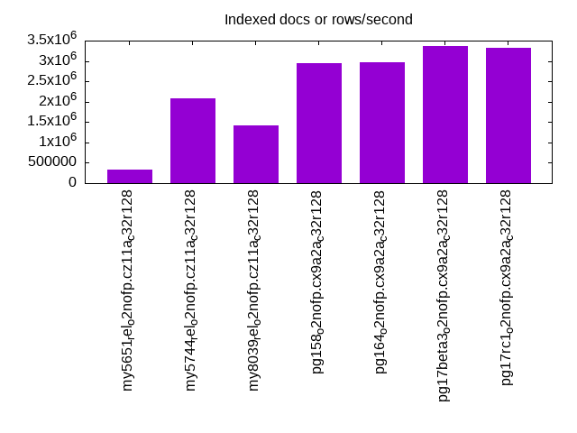
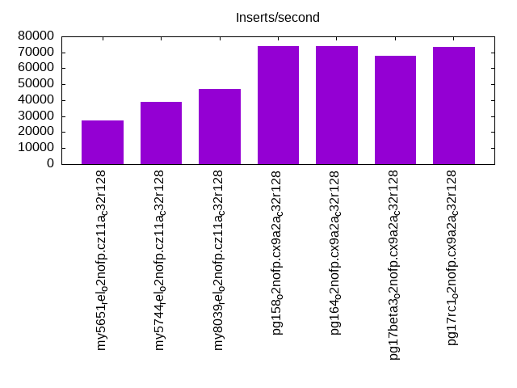
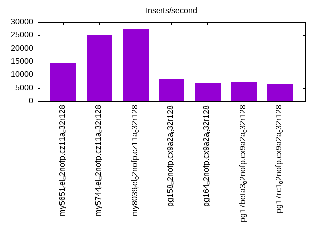
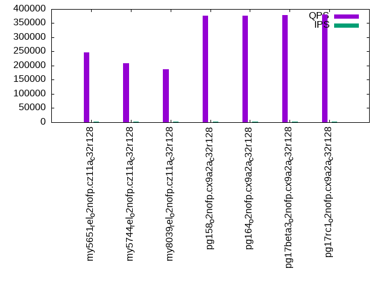
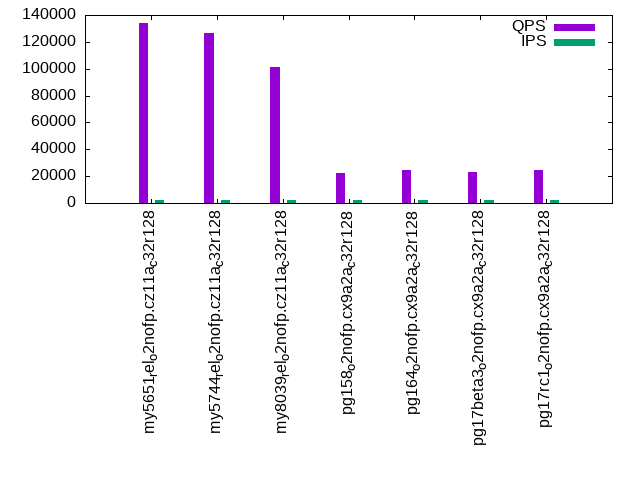
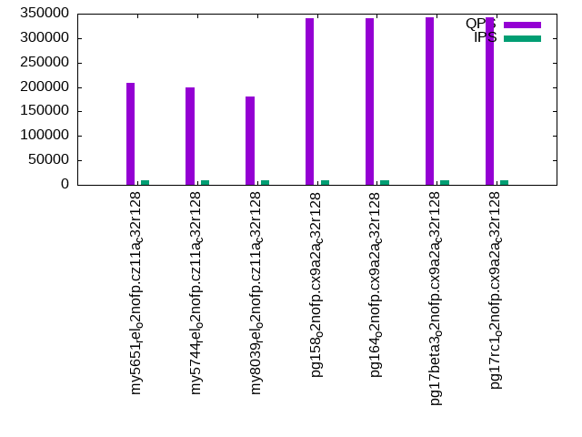
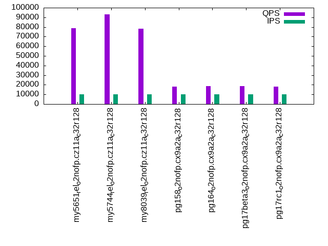
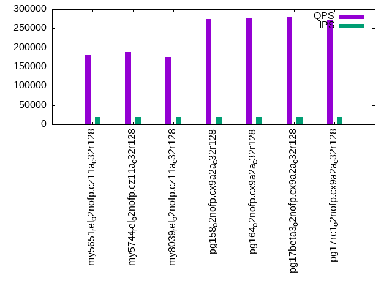
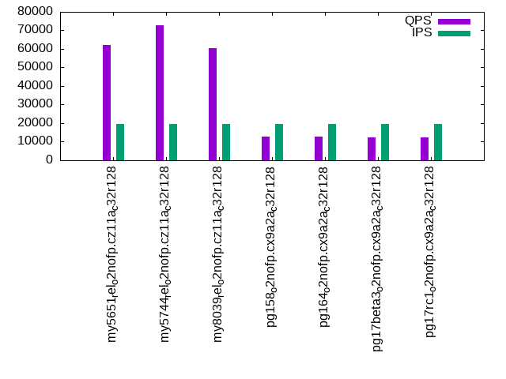

Introduction
This is a report for the insert benchmark with 1280M docs and 20 client(s). It is generated by scripts (bash, awk, sed) and Tufte might not be impressed. An overview of the insert benchmark is here and a short update is here. Below, by DBMS, I mean DBMS+version.config. An example is my8020.c10b40 where my means MySQL, 8020 is version 8.0.20 and c10b40 is the name for the configuration file.
The test server is an ax162-s from Hetzner (see here) with 48 cores, AMD SMT disabled, 128G RAM and ext4 using 2 NVMe devices with SW RAID 1. The benchmark was run with 20 clients and there were 1 or 3 connections per client (1 for queries or inserts without rate limits, 1+1 for rate limited inserts+deletes). It uses 8 tables with a table per client. It loads 64M rows per table without secondary indexes, creates 3 secondary indexes per table, then inserts 4m+1m rows per table with a delete per insert to avoid growing the table. It then does 6 read+write tests for 1800s each that do queries as fast as possible with 100,100,500,500,1000,1000 inserts/s and the same for deletes/s per client concurrent with the queries. The database is larger than memory. Clients and the DBMS share one server.
The tested DBMS are:
- my5651_rel_o2nofp.cz11a_c32r128 - MySQL 5.6.51 compilred with CMAKE_BUILD_TYPE=Release, -O2 and frame pointers using the z11a_c32r128 config
- my5744_rel_o2nofp.cz11a_c32r128 - MySQL 5.7.44 compilred with CMAKE_BUILD_TYPE=Release, -O2 and frame pointers using the z11a_c32r128 config
- my8039_rel_o2nofp.cz11a_c32r128 - MySQL 8.0.39 compilred with CMAKE_BUILD_TYPE=Release, -O2 and frame pointers using the z11a_c32r128 config
- pg158_o2nofp.cx9a2a_c32r128 - Postgres 15.8 compiled with -O2 and frame pointers using the x9a2a_c32r128 config
- pg164_o2nofp.cx9a2a_c32r128 - Postgres 16.4 compiled with -O2 and frame pointers using the x9a2a_c32r128 config
- pg17beta3_o2nofp.cx9a2a_c32r128 - Postgres 17 beta3 compiled with -O2 and frame pointers using the x9a2a_c32r128 config
- pg17rc1_o2nofp.cx9a2a_c32r128 - Postgres 17 rc1 compiled with -O2 and frame pointers using the x9a2a_c32r128 config
Contents
- Summary
- l.i0: load without secondary indexes
- l.x: create secondary indexes
- l.i1: continue load after secondary indexes created with 50 inserts per transaction
- l.i2: continue load after secondary indexes created with 5 inserts per transaction
- qr100.L1: range queries with 100 insert/s per client
- qp100.L2: point queries with 100 insert/s per client
- qr500.L3: range queries with 500 insert/s per client
- qp500.L4: point queries with 500 insert/s per client
- qr1000.L5: range queries with 1000 insert/s per client
- qp1000.L6: point queries with 1000 insert/s per client
Summary
The numbers are inserts/s for l.i0, l.i1 and l.i2, indexed docs (or rows) /s for l.x and queries/s for qr100, qp100 thru qr1000, qp1000" The values are the average rate over the entire test for inserts (IPS) and queries (QPS). The range of values for IPS and QPS is split into 3 parts: bottom 25%, middle 50%, top 25%. Values in the bottom 25% have a red background, values in the top 25% have a green background and values in the middle have no color. A gray background is used for values that can be ignored because the DBMS did not sustain the target insert rate. Red backgrounds are not used when the minimum value is within 80% of the max value.
| dbms | l.i0 | l.x | l.i1 | l.i2 | qr100 | qp100 | qr500 | qp500 | qr1000 | qp1000 |
|---|---|---|---|---|---|---|---|---|---|---|
| my5651_rel_o2nofp.cz11a_c32r128 | 429386 | 330493 | 27586 | 14347 | 246113 | 133990 | 209293 | 78923 | 180610 | 62268 |
| my5744_rel_o2nofp.cz11a_c32r128 | 663556 | 2074554 | 39062 | 25000 | 208125 | 126652 | 198302 | 93297 | 188379 | 72669 |
| my8039_rel_o2nofp.cz11a_c32r128 | 1409692 | 1426979 | 46838 | 27397 | 187093 | 101646 | 181244 | 78424 | 175950 | 60585 |
| pg158_o2nofp.cx9a2a_c32r128 | 1936460 | 2942529 | 73937 | 8532 | 376934 | 22038 | 341294 | 18255 | 274450 | 12827 |
| pg164_o2nofp.cx9a2a_c32r128 | 1951220 | 2976744 | 73801 | 7015 | 376412 | 24387 | 340022 | 18439 | 275278 | 12643 |
| pg17beta3_o2nofp.cx9a2a_c32r128 | 1972265 | 3368421 | 67969 | 7323 | 378857 | 22963 | 343246 | 18539 | 278876 | 12324 |
| pg17rc1_o2nofp.cx9a2a_c32r128 | 2006270 | 3316062 | 73529 | 6500 | 380459 | 24369 | 342689 | 18177 | 270542 | 12472 |
This table has relative throughput, throughput for the DBMS relative to the DBMS in the first line, using the absolute throughput from the previous table. Values less than 0.95 have a yellow background. Values greater than 1.05 have a blue background.
| dbms | l.i0 | l.x | l.i1 | l.i2 | qr100 | qp100 | qr500 | qp500 | qr1000 | qp1000 |
|---|---|---|---|---|---|---|---|---|---|---|
| my5651_rel_o2nofp.cz11a_c32r128 | 1.00 | 1.00 | 1.00 | 1.00 | 1.00 | 1.00 | 1.00 | 1.00 | 1.00 | 1.00 |
| my5744_rel_o2nofp.cz11a_c32r128 | 1.55 | 6.28 | 1.42 | 1.74 | 0.85 | 0.95 | 0.95 | 1.18 | 1.04 | 1.17 |
| my8039_rel_o2nofp.cz11a_c32r128 | 3.28 | 4.32 | 1.70 | 1.91 | 0.76 | 0.76 | 0.87 | 0.99 | 0.97 | 0.97 |
| pg158_o2nofp.cx9a2a_c32r128 | 4.51 | 8.90 | 2.68 | 0.59 | 1.53 | 0.16 | 1.63 | 0.23 | 1.52 | 0.21 |
| pg164_o2nofp.cx9a2a_c32r128 | 4.54 | 9.01 | 2.68 | 0.49 | 1.53 | 0.18 | 1.62 | 0.23 | 1.52 | 0.20 |
| pg17beta3_o2nofp.cx9a2a_c32r128 | 4.59 | 10.19 | 2.46 | 0.51 | 1.54 | 0.17 | 1.64 | 0.23 | 1.54 | 0.20 |
| pg17rc1_o2nofp.cx9a2a_c32r128 | 4.67 | 10.03 | 2.67 | 0.45 | 1.55 | 0.18 | 1.64 | 0.23 | 1.50 | 0.20 |
This lists the average rate of inserts/s for the tests that do inserts concurrent with queries. For such tests the query rate is listed in the table above. The read+write tests are setup so that the insert rate should match the target rate every second. Cells that are not at least 95% of the target have a red background to indicate a failure to satisfy the target.
| dbms | qr100.L1 | qp100.L2 | qr500.L3 | qp500.L4 | qr1000.L5 | qp1000.L6 |
|---|---|---|---|---|---|---|
| my5651_rel_o2nofp.cz11a_c32r128 | 1977 | 1976 | 9879 | 9885 | 19769 | 19769 |
| my5744_rel_o2nofp.cz11a_c32r128 | 1977 | 1976 | 9879 | 9885 | 19769 | 19769 |
| my8039_rel_o2nofp.cz11a_c32r128 | 1977 | 1977 | 9885 | 9885 | 19769 | 19769 |
| pg158_o2nofp.cx9a2a_c32r128 | 1977 | 1977 | 9868 | 9879 | 19672 | 19694 |
| pg164_o2nofp.cx9a2a_c32r128 | 1977 | 1977 | 9847 | 9868 | 19715 | 19651 |
| pg17beta3_o2nofp.cx9a2a_c32r128 | 1977 | 1976 | 9863 | 9879 | 19704 | 19715 |
| pg17rc1_o2nofp.cx9a2a_c32r128 | 1977 | 1977 | 9852 | 9879 | 19640 | 19661 |
| target | 2000 | 2000 | 10000 | 10000 | 20000 | 20000 |
l.i0
l.i0: load without secondary indexes. Graphs for performance per 1-second interval are here.
Average throughput:

Insert response time histogram: each cell has the percentage of responses that take <= the time in the header and max is the max response time in seconds. For the max column values in the top 25% of the range have a red background and in the bottom 25% of the range have a green background. The red background is not used when the min value is within 80% of the max value.
| dbms | 256us | 1ms | 4ms | 16ms | 64ms | 256ms | 1s | 4s | 16s | gt | max |
|---|---|---|---|---|---|---|---|---|---|---|---|
| my5651_rel_o2nofp.cz11a_c32r128 | 0.406 | 33.195 | 65.946 | 0.417 | 0.037 | 0.190 | |||||
| my5744_rel_o2nofp.cz11a_c32r128 | 0.400 | 99.363 | 0.190 | 0.010 | 0.037 | 0.178 | |||||
| my8039_rel_o2nofp.cz11a_c32r128 | 0.240 | 99.670 | 0.038 | 0.012 | 0.039 | 0.234 | |||||
| pg158_o2nofp.cx9a2a_c32r128 | 89.099 | 10.747 | 0.084 | 0.055 | 0.008 | 0.006 | 0.001 | 2.275 | |||
| pg164_o2nofp.cx9a2a_c32r128 | 87.870 | 11.971 | 0.086 | 0.059 | 0.008 | 0.006 | nonzero | 1.449 | |||
| pg17beta3_o2nofp.cx9a2a_c32r128 | 89.346 | 10.463 | 0.125 | 0.049 | 0.010 | 0.006 | nonzero | 1.245 | |||
| pg17rc1_o2nofp.cx9a2a_c32r128 | 90.440 | 9.379 | 0.115 | 0.049 | 0.010 | 0.007 | nonzero | 1.286 |
Performance metrics for the DBMS listed above. Some are normalized by throughput, others are not. Legend for results is here.
ips qps rps rmbps wps wmbps rpq rkbpq wpi wkbpi csps cpups cspq cpupq dbgb1 dbgb2 rss maxop p50 p99 tag 429386 0 989 3.9 2637.0 148.2 0.002 0.009 0.006 0.353 104379 40.3 0.243 45 84.4 184.9 89.9 0.190 23375 15583 my5651_rel_o2nofp.cz11a_c32r128 663556 0 0 0.0 4190.1 230.7 0.000 0.000 0.006 0.356 80348 45.5 0.121 33 84.4 184.9 91.2 0.178 33963 28469 my5744_rel_o2nofp.cz11a_c32r128 1409692 0 1 0.0 8763.5 503.7 0.000 0.000 0.006 0.366 291532 53.7 0.207 18 84.1 184.6 91.3 0.234 75219 60934 my8039_rel_o2nofp.cz11a_c32r128 1936460 0 265 2.8 8870.5 832.3 0.000 0.002 0.005 0.440 307077 56.1 0.159 14 122.5 218.5 17.5 2.275 107415 4795 pg158_o2nofp.cx9a2a_c32r128 1951220 0 229 1.8 8916.3 838.4 0.000 0.001 0.005 0.440 361847 55.7 0.185 14 122.5 218.5 10.1 1.449 108683 9140 pg164_o2nofp.cx9a2a_c32r128 1972265 0 241 2.0 9001.4 848.2 0.000 0.001 0.005 0.440 351303 55.2 0.178 13 122.5 218.5 25.2 1.245 110282 9290 pg17beta3_o2nofp.cx9a2a_c32r128 2006270 0 217 1.8 9140.8 859.6 0.000 0.001 0.005 0.439 349082 55.8 0.174 13 122.5 218.5 95.9 1.286 110856 17681 pg17rc1_o2nofp.cx9a2a_c32r128
l.x
l.x: create secondary indexes.
Average throughput:
Performance metrics for the DBMS listed above. Some are normalized by throughput, others are not. Legend for results is here.
ips qps rps rmbps wps wmbps rpq rkbpq wpi wkbpi csps cpups cspq cpupq dbgb1 dbgb2 rss maxop p50 p99 tag 330493 0 1509 47.7 17799.3 637.1 0.005 0.148 0.054 1.974 117330 36.1 0.355 52 178.4 278.9 107.2 0.003 NA NA my5651_rel_o2nofp.cz11a_c32r128 2074554 0 7346 913.5 33307.6 2072.8 0.004 0.451 0.016 1.023 216112 27.2 0.104 6 193.9 294.4 109.0 0.001 NA NA my5744_rel_o2nofp.cz11a_c32r128 1426979 0 12142 628.7 42868.5 1711.3 0.009 0.451 0.030 1.228 244963 69.6 0.172 23 193.3 293.9 108.0 0.008 NA NA my8039_rel_o2nofp.cz11a_c32r128 2942529 0 9077 556.6 8407.6 871.6 0.003 0.194 0.003 0.303 141800 22.8 0.048 4 245.9 342.0 18.0 0.002 NA NA pg158_o2nofp.cx9a2a_c32r128 2976744 0 9310 553.9 8567.3 882.1 0.003 0.191 0.003 0.303 152447 22.1 0.051 4 245.9 342.0 19.5 0.074 NA NA pg164_o2nofp.cx9a2a_c32r128 3368421 0 10370 637.2 9383.1 991.5 0.003 0.194 0.003 0.301 84592 23.8 0.025 3 245.9 341.9 17.1 0.002 NA NA pg17beta3_o2nofp.cx9a2a_c32r128 3316062 0 10364 647.9 9302.1 980.2 0.003 0.200 0.003 0.303 82090 24.0 0.025 3 245.9 341.9 18.0 0.002 NA NA pg17rc1_o2nofp.cx9a2a_c32r128
l.i1
l.i1: continue load after secondary indexes created with 50 inserts per transaction. Graphs for performance per 1-second interval are here.
Average throughput:
Insert response time histogram: each cell has the percentage of responses that take <= the time in the header and max is the max response time in seconds. For the max column values in the top 25% of the range have a red background and in the bottom 25% of the range have a green background. The red background is not used when the min value is within 80% of the max value.
| dbms | 256us | 1ms | 4ms | 16ms | 64ms | 256ms | 1s | 4s | 16s | gt | max |
|---|---|---|---|---|---|---|---|---|---|---|---|
| my5651_rel_o2nofp.cz11a_c32r128 | 1.161 | 28.206 | 63.883 | 0.665 | 6.086 | 0.511 | |||||
| my5744_rel_o2nofp.cz11a_c32r128 | 6.661 | 82.076 | 5.334 | 0.515 | 5.414 | 0.465 | |||||
| my8039_rel_o2nofp.cz11a_c32r128 | 16.810 | 31.385 | 50.462 | 1.229 | 0.114 | 0.626 | |||||
| pg158_o2nofp.cx9a2a_c32r128 | 0.582 | 75.621 | 11.599 | 12.059 | 0.118 | 0.021 | 0.001 | 1.507 | |||
| pg164_o2nofp.cx9a2a_c32r128 | 0.356 | 75.606 | 12.336 | 11.605 | 0.074 | 0.021 | 0.003 | 1.802 | |||
| pg17beta3_o2nofp.cx9a2a_c32r128 | 0.743 | 75.187 | 11.551 | 12.379 | 0.122 | 0.016 | 0.002 | 1.659 | |||
| pg17rc1_o2nofp.cx9a2a_c32r128 | 1.220 | 74.438 | 11.768 | 12.454 | 0.101 | 0.017 | 0.002 | 1.452 |
Delete response time histogram: each cell has the percentage of responses that take <= the time in the header and max is the max response time in seconds. For the max column values in the top 25% of the range have a red background and in the bottom 25% of the range have a green background. The red background is not used when the min value is within 80% of the max value.
| dbms | 256us | 1ms | 4ms | 16ms | 64ms | 256ms | 1s | 4s | 16s | gt | max |
|---|---|---|---|---|---|---|---|---|---|---|---|
| my5651_rel_o2nofp.cz11a_c32r128 | 0.284 | 26.322 | 66.681 | 0.609 | 6.105 | 0.600 | |||||
| my5744_rel_o2nofp.cz11a_c32r128 | nonzero | 7.681 | 83.969 | 2.440 | 0.483 | 5.426 | 0.465 | ||||
| my8039_rel_o2nofp.cz11a_c32r128 | 17.414 | 32.209 | 49.252 | 1.024 | 0.100 | 0.625 | |||||
| pg158_o2nofp.cx9a2a_c32r128 | 7.662 | 29.932 | 45.957 | 16.358 | 0.086 | 0.004 | nonzero | 1.010 | |||
| pg164_o2nofp.cx9a2a_c32r128 | 7.330 | 27.116 | 48.767 | 16.731 | 0.054 | 0.001 | 0.001 | 1.702 | |||
| pg17beta3_o2nofp.cx9a2a_c32r128 | 8.228 | 26.491 | 43.985 | 21.198 | 0.094 | 0.003 | nonzero | 1.282 | |||
| pg17rc1_o2nofp.cx9a2a_c32r128 | 8.343 | 29.902 | 44.096 | 17.566 | 0.089 | 0.004 | nonzero | 1.225 |
Performance metrics for the DBMS listed above. Some are normalized by throughput, others are not. Legend for results is here.
ips qps rps rmbps wps wmbps rpq rkbpq wpi wkbpi csps cpups cspq cpupq dbgb1 dbgb2 rss maxop p50 p99 tag 27586 0 15552 233.2 30480.8 736.5 0.564 8.657 1.105 27.340 256912 35.7 9.313 621 268.1 373.3 104.8 0.511 1648 150 my5651_rel_o2nofp.cz11a_c32r128 39062 0 19974 312.1 34859.2 1003.3 0.511 8.182 0.892 26.302 206562 35.7 5.288 439 268.5 374.2 107.0 0.465 200 150 my5744_rel_o2nofp.cz11a_c32r128 46838 0 22406 350.1 39630.4 1247.4 0.478 7.654 0.846 27.271 362196 28.6 7.733 293 267.4 375.0 108.2 0.626 1649 899 my8039_rel_o2nofp.cz11a_c32r128 73937 0 11447 162.0 18132.8 868.8 0.155 2.243 0.245 12.032 67266 32.9 0.910 214 257.5 353.5 37.2 1.507 3996 849 pg158_o2nofp.cx9a2a_c32r128 73801 0 11680 163.3 17855.1 871.0 0.158 2.266 0.242 12.086 67237 33.9 0.911 220 257.6 353.6 52.7 1.802 3098 999 pg164_o2nofp.cx9a2a_c32r128 67969 0 10594 149.1 17486.3 826.0 0.156 2.247 0.257 12.444 60819 32.7 0.895 231 257.6 353.6 0.8 1.659 3697 1099 pg17beta3_o2nofp.cx9a2a_c32r128 73529 0 11488 163.3 17636.0 837.5 0.156 2.274 0.240 11.663 65344 32.2 0.889 210 256.7 373.6 94.0 1.452 3248 1099 pg17rc1_o2nofp.cx9a2a_c32r128
l.i2
l.i2: continue load after secondary indexes created with 5 inserts per transaction. Graphs for performance per 1-second interval are here.
Average throughput:
Insert response time histogram: each cell has the percentage of responses that take <= the time in the header and max is the max response time in seconds. For the max column values in the top 25% of the range have a red background and in the bottom 25% of the range have a green background. The red background is not used when the min value is within 80% of the max value.
| dbms | 256us | 1ms | 4ms | 16ms | 64ms | 256ms | 1s | 4s | 16s | gt | max |
|---|---|---|---|---|---|---|---|---|---|---|---|
| my5651_rel_o2nofp.cz11a_c32r128 | 0.006 | 0.787 | 46.170 | 42.368 | 10.662 | 0.007 | 0.149 | ||||
| my5744_rel_o2nofp.cz11a_c32r128 | 0.043 | 24.135 | 65.994 | 0.963 | 8.844 | 0.021 | 0.253 | ||||
| my8039_rel_o2nofp.cz11a_c32r128 | 0.003 | 33.510 | 49.812 | 8.068 | 8.594 | 0.013 | nonzero | 0.416 | |||
| pg158_o2nofp.cx9a2a_c32r128 | 9.100 | 90.877 | 0.019 | 0.002 | nonzero | 0.001 | nonzero | 0.766 | |||
| pg164_o2nofp.cx9a2a_c32r128 | 7.251 | 92.708 | 0.037 | 0.001 | 0.001 | 0.001 | 0.001 | 0.720 | |||
| pg17beta3_o2nofp.cx9a2a_c32r128 | 15.558 | 84.379 | 0.053 | 0.008 | 0.001 | 0.001 | nonzero | 0.535 | |||
| pg17rc1_o2nofp.cx9a2a_c32r128 | 10.046 | 89.913 | 0.036 | 0.003 | 0.001 | 0.001 | 0.001 | 0.563 |
Delete response time histogram: each cell has the percentage of responses that take <= the time in the header and max is the max response time in seconds. For the max column values in the top 25% of the range have a red background and in the bottom 25% of the range have a green background. The red background is not used when the min value is within 80% of the max value.
| dbms | 256us | 1ms | 4ms | 16ms | 64ms | 256ms | 1s | 4s | 16s | gt | max |
|---|---|---|---|---|---|---|---|---|---|---|---|
| my5651_rel_o2nofp.cz11a_c32r128 | 0.001 | 0.912 | 49.662 | 38.756 | 10.663 | 0.006 | 0.154 | ||||
| my5744_rel_o2nofp.cz11a_c32r128 | 0.071 | 24.253 | 66.002 | 0.820 | 8.844 | 0.011 | 0.253 | ||||
| my8039_rel_o2nofp.cz11a_c32r128 | 0.002 | 37.047 | 46.683 | 7.932 | 8.324 | 0.011 | 0.183 | ||||
| pg158_o2nofp.cx9a2a_c32r128 | 0.260 | 2.547 | 20.683 | 75.152 | 1.357 | nonzero | 0.112 | ||||
| pg164_o2nofp.cx9a2a_c32r128 | 23.701 | 72.703 | 3.596 | nonzero | 0.087 | ||||||
| pg17beta3_o2nofp.cx9a2a_c32r128 | 0.440 | 4.699 | 38.177 | 51.243 | 5.441 | nonzero | nonzero | 0.279 | |||
| pg17rc1_o2nofp.cx9a2a_c32r128 | 0.515 | 2.439 | 18.707 | 71.610 | 6.728 | 0.001 | 0.112 |
Performance metrics for the DBMS listed above. Some are normalized by throughput, others are not. Legend for results is here.
ips qps rps rmbps wps wmbps rpq rkbpq wpi wkbpi csps cpups cspq cpupq dbgb1 dbgb2 rss maxop p50 p99 tag 14347 0 10817 141.8 22677.1 589.3 0.754 10.122 1.581 42.062 367777 33.6 25.634 1124 268.1 373.3 104.3 0.149 874 150 my5651_rel_o2nofp.cz11a_c32r128 25000 0 13762 215.0 32892.7 964.3 0.550 8.808 1.316 39.496 266986 31.2 10.679 599 268.5 374.2 107.0 0.253 180 160 my5744_rel_o2nofp.cz11a_c32r128 27397 0 17898 279.7 38124.1 1191.6 0.653 10.453 1.392 44.539 411618 28.5 15.024 499 267.4 372.2 106.1 0.416 340 245 my8039_rel_o2nofp.cz11a_c32r128 8532 0 119 4.8 3757.9 127.4 0.014 0.572 0.440 15.285 42559 26.2 4.988 1474 258.1 354.2 36.5 0.766 400 260 pg158_o2nofp.cx9a2a_c32r128 7015 0 135 2.8 3132.7 111.2 0.019 0.405 0.447 16.239 35069 21.4 4.999 1464 258.0 354.1 36.5 0.720 585 340 pg164_o2nofp.cx9a2a_c32r128 7323 0 178 7.0 3193.2 108.8 0.024 0.978 0.436 15.213 32591 20.1 4.450 1317 258.3 354.3 5.2 0.535 795 509 pg17beta3_o2nofp.cx9a2a_c32r128 6500 0 128 5.4 2705.5 96.7 0.020 0.844 0.416 15.239 28973 23.1 4.457 1706 257.8 353.9 94.0 0.563 1364 685 pg17rc1_o2nofp.cx9a2a_c32r128
qr100.L1
qr100.L1: range queries with 100 insert/s per client. Graphs for performance per 1-second interval are here.
Average throughput:
Query response time histogram: each cell has the percentage of responses that take <= the time in the header and max is the max response time in seconds. For max values in the top 25% of the range have a red background and in the bottom 25% of the range have a green background. The red background is not used when the min value is within 80% of the max value.
| dbms | 256us | 1ms | 4ms | 16ms | 64ms | 256ms | 1s | 4s | 16s | gt | max |
|---|---|---|---|---|---|---|---|---|---|---|---|
| my5651_rel_o2nofp.cz11a_c32r128 | 99.915 | 0.068 | 0.016 | 0.001 | 0.015 | ||||||
| my5744_rel_o2nofp.cz11a_c32r128 | 99.980 | 0.015 | 0.005 | nonzero | 0.016 | ||||||
| my8039_rel_o2nofp.cz11a_c32r128 | 99.975 | 0.022 | 0.003 | nonzero | 0.014 | ||||||
| pg158_o2nofp.cx9a2a_c32r128 | 99.995 | 0.003 | 0.002 | nonzero | nonzero | 0.016 | |||||
| pg164_o2nofp.cx9a2a_c32r128 | 99.994 | 0.004 | 0.002 | nonzero | nonzero | 0.016 | |||||
| pg17beta3_o2nofp.cx9a2a_c32r128 | 99.995 | 0.003 | 0.002 | nonzero | nonzero | 0.017 | |||||
| pg17rc1_o2nofp.cx9a2a_c32r128 | 99.995 | 0.003 | 0.002 | nonzero | nonzero | 0.016 |
Insert response time histogram: each cell has the percentage of responses that take <= the time in the header and max is the max response time in seconds. For max values in the top 25% of the range have a red background and in the bottom 25% of the range have a green background. The red background is not used when the min value is within 80% of the max value.
| dbms | 256us | 1ms | 4ms | 16ms | 64ms | 256ms | 1s | 4s | 16s | gt | max |
|---|---|---|---|---|---|---|---|---|---|---|---|
| my5651_rel_o2nofp.cz11a_c32r128 | 16.951 | 76.499 | 6.550 | 0.036 | |||||||
| my5744_rel_o2nofp.cz11a_c32r128 | 96.383 | 3.611 | 0.006 | 0.025 | |||||||
| my8039_rel_o2nofp.cz11a_c32r128 | 94.701 | 5.299 | 0.013 | ||||||||
| pg158_o2nofp.cx9a2a_c32r128 | 98.368 | 1.632 | 0.015 | ||||||||
| pg164_o2nofp.cx9a2a_c32r128 | 98.653 | 1.331 | 0.017 | 0.036 | |||||||
| pg17beta3_o2nofp.cx9a2a_c32r128 | 98.254 | 1.731 | 0.015 | 0.018 | |||||||
| pg17rc1_o2nofp.cx9a2a_c32r128 | 98.343 | 1.639 | 0.018 | 0.019 |
Delete response time histogram: each cell has the percentage of responses that take <= the time in the header and max is the max response time in seconds. For max values in the top 25% of the range have a red background and in the bottom 25% of the range have a green background. The red background is not used when the min value is within 80% of the max value.
| dbms | 256us | 1ms | 4ms | 16ms | 64ms | 256ms | 1s | 4s | 16s | gt | max |
|---|---|---|---|---|---|---|---|---|---|---|---|
| my5651_rel_o2nofp.cz11a_c32r128 | 30.142 | 66.133 | 3.725 | 0.033 | |||||||
| my5744_rel_o2nofp.cz11a_c32r128 | 0.001 | 98.111 | 1.885 | 0.003 | 0.020 | ||||||
| my8039_rel_o2nofp.cz11a_c32r128 | 97.653 | 2.347 | 0.011 | ||||||||
| pg158_o2nofp.cx9a2a_c32r128 | 44.742 | 55.056 | 0.203 | 0.012 | |||||||
| pg164_o2nofp.cx9a2a_c32r128 | 46.999 | 52.792 | 0.182 | 0.028 | 0.034 | ||||||
| pg17beta3_o2nofp.cx9a2a_c32r128 | 49.183 | 50.600 | 0.217 | 0.014 | |||||||
| pg17rc1_o2nofp.cx9a2a_c32r128 | 47.503 | 52.293 | 0.204 | 0.015 |
Performance metrics for the DBMS listed above. Some are normalized by throughput, others are not. Legend for results is here.
ips qps rps rmbps wps wmbps rpq rkbpq wpi wkbpi csps cpups cspq cpupq dbgb1 dbgb2 rss maxop p50 p99 tag 1977 246113 262 3.5 1720.5 51.0 0.001 0.014 0.870 26.400 949688 42.9 3.859 84 268.1 373.3 104.0 0.015 12623 11172 my5651_rel_o2nofp.cz11a_c32r128 1977 208125 189 3.0 3493.4 100.0 0.001 0.015 1.767 51.803 806237 43.4 3.874 100 268.5 374.2 107.0 0.016 10552 9974 my5744_rel_o2nofp.cz11a_c32r128 1977 187093 117 1.8 3743.5 108.9 0.001 0.010 1.894 56.396 727325 43.1 3.888 111 267.4 372.2 106.1 0.014 9510 8998 my8039_rel_o2nofp.cz11a_c32r128 1977 376934 21 0.8 958.7 32.3 0.000 0.002 0.485 16.720 1431543 42.7 3.798 54 258.1 354.2 96.4 0.016 19275 17837 pg158_o2nofp.cx9a2a_c32r128 1977 376412 32 1.0 906.4 32.3 0.000 0.003 0.458 16.730 1429376 42.7 3.797 54 258.0 354.1 96.2 0.016 18924 17405 pg164_o2nofp.cx9a2a_c32r128 1977 378857 28 0.9 920.8 32.3 0.000 0.002 0.466 16.752 1438152 42.7 3.796 54 258.3 354.3 0.7 0.017 19314 17539 pg17beta3_o2nofp.cx9a2a_c32r128 1977 380459 27 0.8 950.1 32.2 0.000 0.002 0.481 16.675 1444480 42.7 3.797 54 257.9 353.9 95.8 0.016 19387 17821 pg17rc1_o2nofp.cx9a2a_c32r128
qp100.L2
qp100.L2: point queries with 100 insert/s per client. Graphs for performance per 1-second interval are here.
Average throughput:
Query response time histogram: each cell has the percentage of responses that take <= the time in the header and max is the max response time in seconds. For max values in the top 25% of the range have a red background and in the bottom 25% of the range have a green background. The red background is not used when the min value is within 80% of the max value.
| dbms | 256us | 1ms | 4ms | 16ms | 64ms | 256ms | 1s | 4s | 16s | gt | max |
|---|---|---|---|---|---|---|---|---|---|---|---|
| my5651_rel_o2nofp.cz11a_c32r128 | 98.481 | 1.056 | 0.423 | 0.039 | nonzero | 0.037 | |||||
| my5744_rel_o2nofp.cz11a_c32r128 | 97.909 | 1.723 | 0.360 | 0.008 | nonzero | 0.049 | |||||
| my8039_rel_o2nofp.cz11a_c32r128 | 96.622 | 3.013 | 0.348 | 0.017 | 0.014 | ||||||
| pg158_o2nofp.cx9a2a_c32r128 | 13.026 | 83.449 | 2.805 | 0.144 | 0.575 | nonzero | nonzero | nonzero | 1.986 | ||
| pg164_o2nofp.cx9a2a_c32r128 | 13.197 | 83.283 | 2.760 | 0.114 | 0.645 | nonzero | nonzero | 0.950 | |||
| pg17beta3_o2nofp.cx9a2a_c32r128 | 12.298 | 84.094 | 2.911 | 0.105 | 0.591 | nonzero | nonzero | nonzero | 3.020 | ||
| pg17rc1_o2nofp.cx9a2a_c32r128 | 12.051 | 84.550 | 2.650 | 0.098 | 0.650 | nonzero | nonzero | nonzero | 2.336 |
Insert response time histogram: each cell has the percentage of responses that take <= the time in the header and max is the max response time in seconds. For max values in the top 25% of the range have a red background and in the bottom 25% of the range have a green background. The red background is not used when the min value is within 80% of the max value.
| dbms | 256us | 1ms | 4ms | 16ms | 64ms | 256ms | 1s | 4s | 16s | gt | max |
|---|---|---|---|---|---|---|---|---|---|---|---|
| my5651_rel_o2nofp.cz11a_c32r128 | 0.067 | 21.771 | 78.017 | 0.146 | 0.095 | ||||||
| my5744_rel_o2nofp.cz11a_c32r128 | 0.214 | 86.607 | 12.986 | 0.193 | 0.143 | ||||||
| my8039_rel_o2nofp.cz11a_c32r128 | 0.714 | 96.471 | 2.815 | 0.034 | |||||||
| pg158_o2nofp.cx9a2a_c32r128 | 0.183 | 67.256 | 32.146 | 0.279 | 0.081 | 0.056 | 1.131 | ||||
| pg164_o2nofp.cx9a2a_c32r128 | 0.415 | 64.981 | 34.485 | 0.061 | 0.058 | 0.819 | |||||
| pg17beta3_o2nofp.cx9a2a_c32r128 | 0.365 | 66.408 | 32.867 | 0.172 | 0.129 | 0.058 | 2.658 | ||||
| pg17rc1_o2nofp.cx9a2a_c32r128 | 0.331 | 69.633 | 29.837 | 0.171 | 0.001 | 0.026 | 2.132 |
Delete response time histogram: each cell has the percentage of responses that take <= the time in the header and max is the max response time in seconds. For max values in the top 25% of the range have a red background and in the bottom 25% of the range have a green background. The red background is not used when the min value is within 80% of the max value.
| dbms | 256us | 1ms | 4ms | 16ms | 64ms | 256ms | 1s | 4s | 16s | gt | max |
|---|---|---|---|---|---|---|---|---|---|---|---|
| my5651_rel_o2nofp.cz11a_c32r128 | 8.037 | 79.421 | 12.539 | 0.003 | 0.069 | ||||||
| my5744_rel_o2nofp.cz11a_c32r128 | 77.976 | 21.931 | 0.088 | 0.006 | 0.091 | ||||||
| my8039_rel_o2nofp.cz11a_c32r128 | 92.306 | 7.694 | 0.013 | ||||||||
| pg158_o2nofp.cx9a2a_c32r128 | 91.024 | 4.197 | 4.775 | 0.001 | 0.001 | 0.001 | 1.035 | ||||
| pg164_o2nofp.cx9a2a_c32r128 | 97.057 | 0.378 | 2.558 | 0.007 | 0.798 | ||||||
| pg17beta3_o2nofp.cx9a2a_c32r128 | 94.640 | 2.769 | 2.540 | 0.003 | 0.044 | 0.003 | 2.459 | ||||
| pg17rc1_o2nofp.cx9a2a_c32r128 | 93.318 | 3.949 | 2.718 | 0.015 | 0.121 |
Performance metrics for the DBMS listed above. Some are normalized by throughput, others are not. Legend for results is here.
ips qps rps rmbps wps wmbps rpq rkbpq wpi wkbpi csps cpups cspq cpupq dbgb1 dbgb2 rss maxop p50 p99 tag 1976 133990 13539 210.8 15774.8 360.8 0.101 1.611 7.984 186.968 558092 40.8 4.165 146 268.1 373.3 104.0 0.037 7288 527 my5651_rel_o2nofp.cz11a_c32r128 1976 126652 13496 210.9 14482.7 366.1 0.107 1.705 7.330 189.718 551525 41.5 4.355 157 268.5 374.2 107.0 0.049 6697 655 my5744_rel_o2nofp.cz11a_c32r128 1977 101646 13399 209.4 13144.7 370.0 0.132 2.110 6.649 191.644 442375 41.6 4.352 196 267.4 372.2 106.1 0.014 5407 751 my8039_rel_o2nofp.cz11a_c32r128 1977 22038 74676 611.7 6343.5 69.7 3.389 28.423 3.209 36.122 240928 26.0 10.932 566 258.1 354.2 96.0 1.986 1231 511 pg158_o2nofp.cx9a2a_c32r128 1977 24387 81267 665.7 6299.9 69.6 3.332 27.953 3.187 36.072 264365 29.1 10.840 573 258.0 354.1 96.1 0.950 1518 528 pg164_o2nofp.cx9a2a_c32r128 1976 22963 77666 636.1 6307.8 69.6 3.382 28.367 3.193 36.058 252175 27.3 10.982 571 258.3 354.3 0.9 3.020 1359 495 pg17beta3_o2nofp.cx9a2a_c32r128 1977 24369 81806 670.1 6336.1 69.7 3.357 28.159 3.205 36.105 265279 29.3 10.886 577 257.9 353.9 95.2 2.336 1295 543 pg17rc1_o2nofp.cx9a2a_c32r128
qr500.L3
qr500.L3: range queries with 500 insert/s per client. Graphs for performance per 1-second interval are here.
Average throughput:
Query response time histogram: each cell has the percentage of responses that take <= the time in the header and max is the max response time in seconds. For max values in the top 25% of the range have a red background and in the bottom 25% of the range have a green background. The red background is not used when the min value is within 80% of the max value.
| dbms | 256us | 1ms | 4ms | 16ms | 64ms | 256ms | 1s | 4s | 16s | gt | max |
|---|---|---|---|---|---|---|---|---|---|---|---|
| my5651_rel_o2nofp.cz11a_c32r128 | 99.126 | 0.682 | 0.160 | 0.032 | nonzero | nonzero | 0.098 | ||||
| my5744_rel_o2nofp.cz11a_c32r128 | 99.839 | 0.086 | 0.071 | 0.004 | nonzero | 0.028 | |||||
| my8039_rel_o2nofp.cz11a_c32r128 | 99.858 | 0.119 | 0.022 | 0.001 | nonzero | 0.029 | |||||
| pg158_o2nofp.cx9a2a_c32r128 | 99.971 | 0.025 | 0.004 | nonzero | nonzero | nonzero | nonzero | nonzero | 2.245 | ||
| pg164_o2nofp.cx9a2a_c32r128 | 99.966 | 0.029 | 0.004 | 0.001 | nonzero | nonzero | nonzero | nonzero | 2.780 | ||
| pg17beta3_o2nofp.cx9a2a_c32r128 | 99.972 | 0.023 | 0.005 | nonzero | nonzero | nonzero | nonzero | nonzero | 2.856 | ||
| pg17rc1_o2nofp.cx9a2a_c32r128 | 99.972 | 0.023 | 0.005 | 0.001 | nonzero | nonzero | nonzero | nonzero | 1.805 |
Insert response time histogram: each cell has the percentage of responses that take <= the time in the header and max is the max response time in seconds. For max values in the top 25% of the range have a red background and in the bottom 25% of the range have a green background. The red background is not used when the min value is within 80% of the max value.
| dbms | 256us | 1ms | 4ms | 16ms | 64ms | 256ms | 1s | 4s | 16s | gt | max |
|---|---|---|---|---|---|---|---|---|---|---|---|
| my5651_rel_o2nofp.cz11a_c32r128 | 3.724 | 55.114 | 40.793 | 0.369 | nonzero | 0.262 | |||||
| my5744_rel_o2nofp.cz11a_c32r128 | 50.497 | 46.773 | 2.726 | 0.004 | 0.095 | ||||||
| my8039_rel_o2nofp.cz11a_c32r128 | 40.036 | 58.009 | 1.954 | 0.052 | |||||||
| pg158_o2nofp.cx9a2a_c32r128 | 49.161 | 47.788 | 2.636 | 0.146 | 0.197 | 0.072 | 3.318 | ||||
| pg164_o2nofp.cx9a2a_c32r128 | 46.541 | 51.200 | 1.964 | 0.089 | 0.135 | 0.072 | 3.308 | ||||
| pg17beta3_o2nofp.cx9a2a_c32r128 | 52.125 | 45.525 | 2.053 | 0.097 | 0.140 | 0.060 | 3.487 | ||||
| pg17rc1_o2nofp.cx9a2a_c32r128 | 51.771 | 45.785 | 2.152 | 0.085 | 0.140 | 0.066 | 0.001 | 4.779 |
Delete response time histogram: each cell has the percentage of responses that take <= the time in the header and max is the max response time in seconds. For max values in the top 25% of the range have a red background and in the bottom 25% of the range have a green background. The red background is not used when the min value is within 80% of the max value.
| dbms | 256us | 1ms | 4ms | 16ms | 64ms | 256ms | 1s | 4s | 16s | gt | max |
|---|---|---|---|---|---|---|---|---|---|---|---|
| my5651_rel_o2nofp.cz11a_c32r128 | 0.001 | 6.030 | 62.216 | 31.752 | 0.001 | 0.091 | |||||
| my5744_rel_o2nofp.cz11a_c32r128 | 0.003 | 60.449 | 38.899 | 0.649 | 0.042 | ||||||
| my8039_rel_o2nofp.cz11a_c32r128 | 57.102 | 42.688 | 0.210 | 0.047 | |||||||
| pg158_o2nofp.cx9a2a_c32r128 | 81.164 | 18.612 | 0.207 | 0.003 | 0.009 | 0.004 | 2.262 | ||||
| pg164_o2nofp.cx9a2a_c32r128 | 76.658 | 23.199 | 0.138 | 0.001 | 0.001 | 0.002 | 2.002 | ||||
| pg17beta3_o2nofp.cx9a2a_c32r128 | 82.697 | 17.156 | 0.141 | 0.001 | 0.003 | 0.001 | 2.238 | ||||
| pg17rc1_o2nofp.cx9a2a_c32r128 | 74.422 | 25.429 | 0.141 | 0.003 | 0.004 | 0.001 | 3.538 |
Performance metrics for the DBMS listed above. Some are normalized by throughput, others are not. Legend for results is here.
ips qps rps rmbps wps wmbps rpq rkbpq wpi wkbpi csps cpups cspq cpupq dbgb1 dbgb2 rss maxop p50 p99 tag 9879 209293 4202 62.9 9428.2 266.6 0.020 0.308 0.954 27.634 858908 46.2 4.104 106 268.1 373.3 104.2 0.098 10964 1375 my5651_rel_o2nofp.cz11a_c32r128 9879 198302 3840 60.0 8838.9 254.7 0.019 0.310 0.895 26.401 786952 47.2 3.968 114 268.5 374.2 107.0 0.028 10165 4123 my5744_rel_o2nofp.cz11a_c32r128 9885 181244 4148 64.8 9992.3 300.1 0.023 0.366 1.011 31.087 734486 46.6 4.052 123 267.4 372.2 106.1 0.029 9238 8266 my8039_rel_o2nofp.cz11a_c32r128 9868 341294 6173 53.6 7235.0 163.4 0.018 0.161 0.733 16.960 1292858 46.3 3.788 65 258.4 354.4 86.6 2.245 17389 14800 pg158_o2nofp.cx9a2a_c32r128 9847 340022 6209 53.7 7229.2 163.8 0.018 0.162 0.734 17.030 1287051 45.7 3.785 65 258.2 354.3 88.7 2.780 17405 14998 pg164_o2nofp.cx9a2a_c32r128 9863 343246 6185 53.7 7231.3 163.7 0.018 0.160 0.733 16.992 1298423 46.2 3.783 65 258.4 354.5 84.0 2.856 17565 15503 pg17beta3_o2nofp.cx9a2a_c32r128 9852 342689 6171 53.7 7240.0 163.7 0.018 0.160 0.735 17.012 1297163 46.2 3.785 65 258.2 354.3 84.7 1.805 17453 15296 pg17rc1_o2nofp.cx9a2a_c32r128
qp500.L4
qp500.L4: point queries with 500 insert/s per client. Graphs for performance per 1-second interval are here.
Average throughput:
Query response time histogram: each cell has the percentage of responses that take <= the time in the header and max is the max response time in seconds. For max values in the top 25% of the range have a red background and in the bottom 25% of the range have a green background. The red background is not used when the min value is within 80% of the max value.
| dbms | 256us | 1ms | 4ms | 16ms | 64ms | 256ms | 1s | 4s | 16s | gt | max |
|---|---|---|---|---|---|---|---|---|---|---|---|
| my5651_rel_o2nofp.cz11a_c32r128 | 86.401 | 10.090 | 3.186 | 0.322 | nonzero | 0.037 | |||||
| my5744_rel_o2nofp.cz11a_c32r128 | 89.861 | 8.448 | 1.649 | 0.043 | nonzero | 0.021 | |||||
| my8039_rel_o2nofp.cz11a_c32r128 | 85.134 | 13.129 | 1.698 | 0.039 | nonzero | 0.019 | |||||
| pg158_o2nofp.cx9a2a_c32r128 | 3.198 | 86.614 | 8.888 | 0.114 | 1.180 | 0.003 | 0.003 | nonzero | 1.015 | ||
| pg164_o2nofp.cx9a2a_c32r128 | 3.184 | 86.722 | 8.835 | 0.036 | 1.220 | 0.001 | 0.002 | nonzero | 2.913 | ||
| pg17beta3_o2nofp.cx9a2a_c32r128 | 3.142 | 86.366 | 9.216 | 0.044 | 1.229 | 0.001 | 0.001 | 0.964 | |||
| pg17rc1_o2nofp.cx9a2a_c32r128 | 3.138 | 86.333 | 9.290 | 0.046 | 1.189 | 0.002 | 0.002 | nonzero | 1.599 |
Insert response time histogram: each cell has the percentage of responses that take <= the time in the header and max is the max response time in seconds. For max values in the top 25% of the range have a red background and in the bottom 25% of the range have a green background. The red background is not used when the min value is within 80% of the max value.
| dbms | 256us | 1ms | 4ms | 16ms | 64ms | 256ms | 1s | 4s | 16s | gt | max |
|---|---|---|---|---|---|---|---|---|---|---|---|
| my5651_rel_o2nofp.cz11a_c32r128 | 0.047 | 1.591 | 88.833 | 9.528 | 0.152 | ||||||
| my5744_rel_o2nofp.cz11a_c32r128 | 0.201 | 6.754 | 92.932 | 0.112 | 0.096 | ||||||
| my8039_rel_o2nofp.cz11a_c32r128 | 0.707 | 23.426 | 75.867 | 0.057 | |||||||
| pg158_o2nofp.cx9a2a_c32r128 | 0.089 | 63.384 | 35.992 | 0.289 | 0.234 | 0.013 | 1.654 | ||||
| pg164_o2nofp.cx9a2a_c32r128 | 0.103 | 69.971 | 29.637 | 0.115 | 0.157 | 0.016 | 2.515 | ||||
| pg17beta3_o2nofp.cx9a2a_c32r128 | 0.113 | 65.192 | 34.458 | 0.120 | 0.114 | 0.003 | 1.276 | ||||
| pg17rc1_o2nofp.cx9a2a_c32r128 | 0.105 | 66.761 | 32.803 | 0.150 | 0.175 | 0.007 | 1.526 |
Delete response time histogram: each cell has the percentage of responses that take <= the time in the header and max is the max response time in seconds. For max values in the top 25% of the range have a red background and in the bottom 25% of the range have a green background. The red background is not used when the min value is within 80% of the max value.
| dbms | 256us | 1ms | 4ms | 16ms | 64ms | 256ms | 1s | 4s | 16s | gt | max |
|---|---|---|---|---|---|---|---|---|---|---|---|
| my5651_rel_o2nofp.cz11a_c32r128 | 0.708 | 61.969 | 37.316 | 0.007 | 0.101 | ||||||
| my5744_rel_o2nofp.cz11a_c32r128 | 10.992 | 84.257 | 4.751 | 0.050 | |||||||
| my8039_rel_o2nofp.cz11a_c32r128 | 51.619 | 48.107 | 0.274 | 0.045 | |||||||
| pg158_o2nofp.cx9a2a_c32r128 | 1.232 | 93.355 | 5.222 | 0.107 | 0.084 | 0.001 | 1.023 | ||||
| pg164_o2nofp.cx9a2a_c32r128 | 2.301 | 94.334 | 3.240 | 0.058 | 0.066 | 0.001 | 2.395 | ||||
| pg17beta3_o2nofp.cx9a2a_c32r128 | 2.474 | 93.966 | 3.454 | 0.051 | 0.055 | 0.676 | |||||
| pg17rc1_o2nofp.cx9a2a_c32r128 | 2.123 | 94.390 | 3.346 | 0.071 | 0.070 | 0.976 |
Performance metrics for the DBMS listed above. Some are normalized by throughput, others are not. Legend for results is here.
ips qps rps rmbps wps wmbps rpq rkbpq wpi wkbpi csps cpups cspq cpupq dbgb1 dbgb2 rss maxop p50 p99 tag 9885 78923 42241 656.2 56373.9 924.7 0.535 8.514 5.703 95.795 660394 47.6 8.368 289 268.1 373.3 105.0 0.037 5914 368 my5651_rel_o2nofp.cz11a_c32r128 9885 93297 50552 789.9 60533.4 1302.5 0.542 8.669 6.124 134.935 640147 48.9 6.861 252 268.5 374.2 107.0 0.021 5420 479 my5744_rel_o2nofp.cz11a_c32r128 9885 78424 53470 835.5 47677.8 1310.5 0.682 10.909 4.823 135.763 548505 45.2 6.994 277 267.4 372.2 106.1 0.019 4524 575 my8039_rel_o2nofp.cz11a_c32r128 9879 18255 90692 723.7 22073.7 266.3 4.968 40.597 2.234 27.603 258913 36.8 14.183 968 259.7 355.7 82.8 1.015 1007 368 pg158_o2nofp.cx9a2a_c32r128 9868 18439 91127 726.3 22077.6 265.4 4.942 40.334 2.237 27.538 261871 37.6 14.202 979 259.7 355.7 86.5 2.913 991 384 pg164_o2nofp.cx9a2a_c32r128 9879 18539 91634 730.4 21986.3 264.9 4.943 40.343 2.226 27.456 261012 38.3 14.079 992 259.7 355.7 84.0 0.964 991 431 pg17beta3_o2nofp.cx9a2a_c32r128 9879 18177 90430 720.9 22048.6 266.2 4.975 40.609 2.232 27.590 257422 37.5 14.162 990 259.5 355.6 84.7 1.599 975 415 pg17rc1_o2nofp.cx9a2a_c32r128
qr1000.L5
qr1000.L5: range queries with 1000 insert/s per client. Graphs for performance per 1-second interval are here.
Average throughput:
Query response time histogram: each cell has the percentage of responses that take <= the time in the header and max is the max response time in seconds. For max values in the top 25% of the range have a red background and in the bottom 25% of the range have a green background. The red background is not used when the min value is within 80% of the max value.
| dbms | 256us | 1ms | 4ms | 16ms | 64ms | 256ms | 1s | 4s | 16s | gt | max |
|---|---|---|---|---|---|---|---|---|---|---|---|
| my5651_rel_o2nofp.cz11a_c32r128 | 97.973 | 1.659 | 0.300 | 0.068 | nonzero | nonzero | 0.067 | ||||
| my5744_rel_o2nofp.cz11a_c32r128 | 99.716 | 0.173 | 0.099 | 0.012 | nonzero | 0.032 | |||||
| my8039_rel_o2nofp.cz11a_c32r128 | 99.782 | 0.171 | 0.044 | 0.003 | nonzero | 0.026 | |||||
| pg158_o2nofp.cx9a2a_c32r128 | 99.811 | 0.154 | 0.019 | 0.010 | 0.007 | nonzero | nonzero | nonzero | 3.735 | ||
| pg164_o2nofp.cx9a2a_c32r128 | 99.828 | 0.141 | 0.017 | 0.009 | 0.005 | nonzero | nonzero | nonzero | 1.990 | ||
| pg17beta3_o2nofp.cx9a2a_c32r128 | 99.837 | 0.133 | 0.017 | 0.008 | 0.005 | nonzero | nonzero | nonzero | 3.412 | ||
| pg17rc1_o2nofp.cx9a2a_c32r128 | 99.813 | 0.149 | 0.019 | 0.011 | 0.007 | nonzero | nonzero | nonzero | 3.889 |
Insert response time histogram: each cell has the percentage of responses that take <= the time in the header and max is the max response time in seconds. For max values in the top 25% of the range have a red background and in the bottom 25% of the range have a green background. The red background is not used when the min value is within 80% of the max value.
| dbms | 256us | 1ms | 4ms | 16ms | 64ms | 256ms | 1s | 4s | 16s | gt | max |
|---|---|---|---|---|---|---|---|---|---|---|---|
| my5651_rel_o2nofp.cz11a_c32r128 | 2.586 | 51.566 | 45.673 | 0.175 | 0.181 | ||||||
| my5744_rel_o2nofp.cz11a_c32r128 | 21.283 | 74.238 | 4.479 | 0.059 | |||||||
| my8039_rel_o2nofp.cz11a_c32r128 | 34.257 | 64.085 | 1.659 | 0.055 | |||||||
| pg158_o2nofp.cx9a2a_c32r128 | 51.576 | 34.815 | 12.723 | 0.772 | 0.087 | 0.028 | nonzero | 4.251 | |||
| pg164_o2nofp.cx9a2a_c32r128 | 54.289 | 33.640 | 11.507 | 0.483 | 0.063 | 0.018 | nonzero | 4.675 | |||
| pg17beta3_o2nofp.cx9a2a_c32r128 | 54.197 | 34.015 | 11.336 | 0.389 | 0.052 | 0.011 | 0.001 | 5.129 | |||
| pg17rc1_o2nofp.cx9a2a_c32r128 | 51.511 | 33.755 | 13.585 | 1.075 | 0.057 | 0.015 | 0.002 | 4.875 |
Delete response time histogram: each cell has the percentage of responses that take <= the time in the header and max is the max response time in seconds. For max values in the top 25% of the range have a red background and in the bottom 25% of the range have a green background. The red background is not used when the min value is within 80% of the max value.
| dbms | 256us | 1ms | 4ms | 16ms | 64ms | 256ms | 1s | 4s | 16s | gt | max |
|---|---|---|---|---|---|---|---|---|---|---|---|
| my5651_rel_o2nofp.cz11a_c32r128 | 0.001 | 3.378 | 58.275 | 38.343 | 0.003 | 0.078 | |||||
| my5744_rel_o2nofp.cz11a_c32r128 | 0.003 | 27.866 | 69.114 | 3.017 | 0.051 | ||||||
| my8039_rel_o2nofp.cz11a_c32r128 | 47.130 | 52.266 | 0.604 | nonzero | 0.070 | ||||||
| pg158_o2nofp.cx9a2a_c32r128 | 4.603 | 24.946 | 51.781 | 18.320 | 0.336 | 0.012 | 0.002 | 3.759 | |||
| pg164_o2nofp.cx9a2a_c32r128 | 4.723 | 24.120 | 54.570 | 16.377 | 0.205 | 0.005 | 0.001 | 2.352 | |||
| pg17beta3_o2nofp.cx9a2a_c32r128 | 5.162 | 26.366 | 49.319 | 18.986 | 0.161 | 0.005 | nonzero | 3.957 | |||
| pg17rc1_o2nofp.cx9a2a_c32r128 | 4.185 | 23.800 | 50.293 | 21.297 | 0.418 | 0.006 | 0.001 | nonzero | 4.276 |
Performance metrics for the DBMS listed above. Some are normalized by throughput, others are not. Legend for results is here.
ips qps rps rmbps wps wmbps rpq rkbpq wpi wkbpi csps cpups cspq cpupq dbgb1 dbgb2 rss maxop p50 p99 tag 19769 180610 4156 59.7 10856.3 321.8 0.023 0.338 0.549 16.668 775134 50.4 4.292 134 268.1 373.3 105.0 0.067 9446 1103 my5651_rel_o2nofp.cz11a_c32r128 19769 188379 3929 61.4 13563.2 400.8 0.021 0.334 0.686 20.760 749200 52.0 3.977 132 268.5 374.2 107.0 0.032 9685 4875 my5744_rel_o2nofp.cz11a_c32r128 19769 175950 3880 60.6 13727.0 422.3 0.022 0.353 0.694 21.875 727868 49.3 4.137 134 267.4 372.2 106.1 0.026 8950 7850 my8039_rel_o2nofp.cz11a_c32r128 19672 274450 8289 114.0 14837.7 417.3 0.030 0.425 0.754 21.721 977416 55.8 3.561 98 263.5 359.6 52.9 3.735 13873 9478 pg158_o2nofp.cx9a2a_c32r128 19715 275278 8355 115.0 15320.5 423.0 0.030 0.428 0.777 21.972 980254 56.4 3.561 98 263.5 359.6 56.8 1.990 13878 9247 pg164_o2nofp.cx9a2a_c32r128 19704 278876 8363 114.9 15193.3 421.4 0.030 0.422 0.771 21.902 992902 56.6 3.560 97 263.3 359.4 92.2 3.412 14001 9989 pg17beta3_o2nofp.cx9a2a_c32r128 19640 270542 8314 114.5 15215.7 420.8 0.031 0.433 0.775 21.940 962296 56.0 3.557 99 263.5 359.5 91.9 3.889 13658 8423 pg17rc1_o2nofp.cx9a2a_c32r128
qp1000.L6
qp1000.L6: point queries with 1000 insert/s per client. Graphs for performance per 1-second interval are here.
Average throughput:
Query response time histogram: each cell has the percentage of responses that take <= the time in the header and max is the max response time in seconds. For max values in the top 25% of the range have a red background and in the bottom 25% of the range have a green background. The red background is not used when the min value is within 80% of the max value.
| dbms | 256us | 1ms | 4ms | 16ms | 64ms | 256ms | 1s | 4s | 16s | gt | max |
|---|---|---|---|---|---|---|---|---|---|---|---|
| my5651_rel_o2nofp.cz11a_c32r128 | 80.824 | 12.764 | 5.980 | 0.431 | 0.001 | 0.041 | |||||
| my5744_rel_o2nofp.cz11a_c32r128 | 84.643 | 10.379 | 4.886 | 0.092 | 0.001 | 0.043 | |||||
| my8039_rel_o2nofp.cz11a_c32r128 | 75.557 | 19.937 | 4.399 | 0.107 | nonzero | 0.029 | |||||
| pg158_o2nofp.cx9a2a_c32r128 | 0.427 | 65.808 | 31.491 | 0.396 | 1.868 | 0.005 | 0.005 | nonzero | 1.539 | ||
| pg164_o2nofp.cx9a2a_c32r128 | 0.437 | 64.744 | 32.703 | 0.290 | 1.817 | 0.003 | 0.005 | nonzero | nonzero | 5.200 | |
| pg17beta3_o2nofp.cx9a2a_c32r128 | 0.353 | 62.481 | 34.883 | 0.298 | 1.976 | 0.004 | 0.004 | nonzero | 1.443 | ||
| pg17rc1_o2nofp.cx9a2a_c32r128 | 0.387 | 63.429 | 34.014 | 0.282 | 1.881 | 0.003 | 0.004 | nonzero | nonzero | 4.045 |
Insert response time histogram: each cell has the percentage of responses that take <= the time in the header and max is the max response time in seconds. For max values in the top 25% of the range have a red background and in the bottom 25% of the range have a green background. The red background is not used when the min value is within 80% of the max value.
| dbms | 256us | 1ms | 4ms | 16ms | 64ms | 256ms | 1s | 4s | 16s | gt | max |
|---|---|---|---|---|---|---|---|---|---|---|---|
| my5651_rel_o2nofp.cz11a_c32r128 | 0.050 | 10.944 | 86.310 | 2.696 | 0.243 | ||||||
| my5744_rel_o2nofp.cz11a_c32r128 | 0.193 | 41.661 | 58.069 | 0.077 | 0.099 | ||||||
| my8039_rel_o2nofp.cz11a_c32r128 | 0.921 | 53.790 | 45.232 | 0.057 | 0.109 | ||||||
| pg158_o2nofp.cx9a2a_c32r128 | 0.388 | 58.457 | 40.701 | 0.281 | 0.155 | 0.018 | 1.548 | ||||
| pg164_o2nofp.cx9a2a_c32r128 | 0.392 | 57.575 | 41.677 | 0.188 | 0.159 | 0.006 | 0.002 | 5.135 | |||
| pg17beta3_o2nofp.cx9a2a_c32r128 | 0.370 | 57.125 | 42.122 | 0.236 | 0.138 | 0.009 | 1.578 | ||||
| pg17rc1_o2nofp.cx9a2a_c32r128 | 0.403 | 58.136 | 41.035 | 0.292 | 0.117 | 0.017 | 0.001 | 4.015 |
Delete response time histogram: each cell has the percentage of responses that take <= the time in the header and max is the max response time in seconds. For max values in the top 25% of the range have a red background and in the bottom 25% of the range have a green background. The red background is not used when the min value is within 80% of the max value.
| dbms | 256us | 1ms | 4ms | 16ms | 64ms | 256ms | 1s | 4s | 16s | gt | max |
|---|---|---|---|---|---|---|---|---|---|---|---|
| my5651_rel_o2nofp.cz11a_c32r128 | nonzero | 0.190 | 26.557 | 72.845 | 0.408 | 0.203 | |||||
| my5744_rel_o2nofp.cz11a_c32r128 | nonzero | 11.111 | 85.369 | 3.519 | 0.001 | 0.078 | |||||
| my8039_rel_o2nofp.cz11a_c32r128 | nonzero | 22.368 | 71.783 | 5.844 | 0.005 | 0.092 | |||||
| pg158_o2nofp.cx9a2a_c32r128 | 15.328 | 78.871 | 5.638 | 0.074 | 0.082 | 0.008 | 1.541 | ||||
| pg164_o2nofp.cx9a2a_c32r128 | 9.462 | 86.353 | 4.063 | 0.046 | 0.072 | 0.004 | 1.425 | ||||
| pg17beta3_o2nofp.cx9a2a_c32r128 | 13.438 | 82.121 | 4.328 | 0.044 | 0.066 | 0.003 | 1.390 | ||||
| pg17rc1_o2nofp.cx9a2a_c32r128 | 11.808 | 83.662 | 4.427 | 0.037 | 0.059 | 0.007 | 3.293 |
Performance metrics for the DBMS listed above. Some are normalized by throughput, others are not. Legend for results is here.
ips qps rps rmbps wps wmbps rpq rkbpq wpi wkbpi csps cpups cspq cpupq dbgb1 dbgb2 rss maxop p50 p99 tag 19769 62268 43736 676.1 47234.0 798.0 0.702 11.118 2.389 41.333 572078 52.5 9.187 405 268.1 378.3 105.0 0.041 5738 336 my5651_rel_o2nofp.cz11a_c32r128 19769 72669 68050 1063.3 59109.1 1306.5 0.936 14.983 2.990 67.676 589315 47.8 8.110 316 268.5 374.2 107.0 0.043 6105 448 my5744_rel_o2nofp.cz11a_c32r128 19769 60585 65182 1018.5 43655.5 1249.3 1.076 17.214 2.208 64.713 523099 47.0 8.634 372 267.4 373.2 106.1 0.029 4587 495 my8039_rel_o2nofp.cz11a_c32r128 19694 12827 95103 755.4 35291.8 468.9 7.414 60.303 1.792 24.380 249349 43.6 19.439 1632 264.5 360.5 89.3 1.539 671 192 pg158_o2nofp.cx9a2a_c32r128 19651 12643 94256 748.7 34953.8 464.7 7.455 60.639 1.779 24.217 246802 44.4 19.521 1686 264.5 360.5 56.5 5.200 671 223 pg164_o2nofp.cx9a2a_c32r128 19715 12324 93129 739.8 34984.8 465.0 7.557 61.470 1.775 24.150 243843 45.1 19.787 1757 264.4 360.4 86.4 1.443 655 224 pg17beta3_o2nofp.cx9a2a_c32r128 19661 12472 93538 742.9 34892.1 465.4 7.500 61.001 1.775 24.237 244953 44.3 19.641 1705 264.4 360.4 78.1 4.045 655 192 pg17rc1_o2nofp.cx9a2a_c32r128
l.i0
l.i0: load without secondary indexes
Performance metrics for all DBMS, not just the ones listed above. Some are normalized by throughput, others are not. Legend for results is here.
ips qps rps rmbps wps wmbps rpq rkbpq wpi wkbpi csps cpups cspq cpupq dbgb1 dbgb2 rss maxop p50 p99 tag 429386 0 989 3.9 2637.0 148.2 0.002 0.009 0.006 0.353 104379 40.3 0.243 45 84.4 184.9 89.9 0.190 23375 15583 my5651_rel_o2nofp.cz11a_c32r128 663556 0 0 0.0 4190.1 230.7 0.000 0.000 0.006 0.356 80348 45.5 0.121 33 84.4 184.9 91.2 0.178 33963 28469 my5744_rel_o2nofp.cz11a_c32r128 1409692 0 1 0.0 8763.5 503.7 0.000 0.000 0.006 0.366 291532 53.7 0.207 18 84.1 184.6 91.3 0.234 75219 60934 my8039_rel_o2nofp.cz11a_c32r128 1936460 0 265 2.8 8870.5 832.3 0.000 0.002 0.005 0.440 307077 56.1 0.159 14 122.5 218.5 17.5 2.275 107415 4795 pg158_o2nofp.cx9a2a_c32r128 1951220 0 229 1.8 8916.3 838.4 0.000 0.001 0.005 0.440 361847 55.7 0.185 14 122.5 218.5 10.1 1.449 108683 9140 pg164_o2nofp.cx9a2a_c32r128 1972265 0 241 2.0 9001.4 848.2 0.000 0.001 0.005 0.440 351303 55.2 0.178 13 122.5 218.5 25.2 1.245 110282 9290 pg17beta3_o2nofp.cx9a2a_c32r128 2006270 0 217 1.8 9140.8 859.6 0.000 0.001 0.005 0.439 349082 55.8 0.174 13 122.5 218.5 95.9 1.286 110856 17681 pg17rc1_o2nofp.cx9a2a_c32r128
l.x
l.x: create secondary indexes
Performance metrics for all DBMS, not just the ones listed above. Some are normalized by throughput, others are not. Legend for results is here.
ips qps rps rmbps wps wmbps rpq rkbpq wpi wkbpi csps cpups cspq cpupq dbgb1 dbgb2 rss maxop p50 p99 tag 330493 0 1509 47.7 17799.3 637.1 0.005 0.148 0.054 1.974 117330 36.1 0.355 52 178.4 278.9 107.2 0.003 NA NA my5651_rel_o2nofp.cz11a_c32r128 2074554 0 7346 913.5 33307.6 2072.8 0.004 0.451 0.016 1.023 216112 27.2 0.104 6 193.9 294.4 109.0 0.001 NA NA my5744_rel_o2nofp.cz11a_c32r128 1426979 0 12142 628.7 42868.5 1711.3 0.009 0.451 0.030 1.228 244963 69.6 0.172 23 193.3 293.9 108.0 0.008 NA NA my8039_rel_o2nofp.cz11a_c32r128 2942529 0 9077 556.6 8407.6 871.6 0.003 0.194 0.003 0.303 141800 22.8 0.048 4 245.9 342.0 18.0 0.002 NA NA pg158_o2nofp.cx9a2a_c32r128 2976744 0 9310 553.9 8567.3 882.1 0.003 0.191 0.003 0.303 152447 22.1 0.051 4 245.9 342.0 19.5 0.074 NA NA pg164_o2nofp.cx9a2a_c32r128 3368421 0 10370 637.2 9383.1 991.5 0.003 0.194 0.003 0.301 84592 23.8 0.025 3 245.9 341.9 17.1 0.002 NA NA pg17beta3_o2nofp.cx9a2a_c32r128 3316062 0 10364 647.9 9302.1 980.2 0.003 0.200 0.003 0.303 82090 24.0 0.025 3 245.9 341.9 18.0 0.002 NA NA pg17rc1_o2nofp.cx9a2a_c32r128
l.i1
l.i1: continue load after secondary indexes created with 50 inserts per transaction
Performance metrics for all DBMS, not just the ones listed above. Some are normalized by throughput, others are not. Legend for results is here.
ips qps rps rmbps wps wmbps rpq rkbpq wpi wkbpi csps cpups cspq cpupq dbgb1 dbgb2 rss maxop p50 p99 tag 27586 0 15552 233.2 30480.8 736.5 0.564 8.657 1.105 27.340 256912 35.7 9.313 621 268.1 373.3 104.8 0.511 1648 150 my5651_rel_o2nofp.cz11a_c32r128 39062 0 19974 312.1 34859.2 1003.3 0.511 8.182 0.892 26.302 206562 35.7 5.288 439 268.5 374.2 107.0 0.465 200 150 my5744_rel_o2nofp.cz11a_c32r128 46838 0 22406 350.1 39630.4 1247.4 0.478 7.654 0.846 27.271 362196 28.6 7.733 293 267.4 375.0 108.2 0.626 1649 899 my8039_rel_o2nofp.cz11a_c32r128 73937 0 11447 162.0 18132.8 868.8 0.155 2.243 0.245 12.032 67266 32.9 0.910 214 257.5 353.5 37.2 1.507 3996 849 pg158_o2nofp.cx9a2a_c32r128 73801 0 11680 163.3 17855.1 871.0 0.158 2.266 0.242 12.086 67237 33.9 0.911 220 257.6 353.6 52.7 1.802 3098 999 pg164_o2nofp.cx9a2a_c32r128 67969 0 10594 149.1 17486.3 826.0 0.156 2.247 0.257 12.444 60819 32.7 0.895 231 257.6 353.6 0.8 1.659 3697 1099 pg17beta3_o2nofp.cx9a2a_c32r128 73529 0 11488 163.3 17636.0 837.5 0.156 2.274 0.240 11.663 65344 32.2 0.889 210 256.7 373.6 94.0 1.452 3248 1099 pg17rc1_o2nofp.cx9a2a_c32r128
l.i2
l.i2: continue load after secondary indexes created with 5 inserts per transaction
Performance metrics for all DBMS, not just the ones listed above. Some are normalized by throughput, others are not. Legend for results is here.
ips qps rps rmbps wps wmbps rpq rkbpq wpi wkbpi csps cpups cspq cpupq dbgb1 dbgb2 rss maxop p50 p99 tag 14347 0 10817 141.8 22677.1 589.3 0.754 10.122 1.581 42.062 367777 33.6 25.634 1124 268.1 373.3 104.3 0.149 874 150 my5651_rel_o2nofp.cz11a_c32r128 25000 0 13762 215.0 32892.7 964.3 0.550 8.808 1.316 39.496 266986 31.2 10.679 599 268.5 374.2 107.0 0.253 180 160 my5744_rel_o2nofp.cz11a_c32r128 27397 0 17898 279.7 38124.1 1191.6 0.653 10.453 1.392 44.539 411618 28.5 15.024 499 267.4 372.2 106.1 0.416 340 245 my8039_rel_o2nofp.cz11a_c32r128 8532 0 119 4.8 3757.9 127.4 0.014 0.572 0.440 15.285 42559 26.2 4.988 1474 258.1 354.2 36.5 0.766 400 260 pg158_o2nofp.cx9a2a_c32r128 7015 0 135 2.8 3132.7 111.2 0.019 0.405 0.447 16.239 35069 21.4 4.999 1464 258.0 354.1 36.5 0.720 585 340 pg164_o2nofp.cx9a2a_c32r128 7323 0 178 7.0 3193.2 108.8 0.024 0.978 0.436 15.213 32591 20.1 4.450 1317 258.3 354.3 5.2 0.535 795 509 pg17beta3_o2nofp.cx9a2a_c32r128 6500 0 128 5.4 2705.5 96.7 0.020 0.844 0.416 15.239 28973 23.1 4.457 1706 257.8 353.9 94.0 0.563 1364 685 pg17rc1_o2nofp.cx9a2a_c32r128
qr100.L1
qr100.L1: range queries with 100 insert/s per client
Performance metrics for all DBMS, not just the ones listed above. Some are normalized by throughput, others are not. Legend for results is here.
ips qps rps rmbps wps wmbps rpq rkbpq wpi wkbpi csps cpups cspq cpupq dbgb1 dbgb2 rss maxop p50 p99 tag 1977 246113 262 3.5 1720.5 51.0 0.001 0.014 0.870 26.400 949688 42.9 3.859 84 268.1 373.3 104.0 0.015 12623 11172 my5651_rel_o2nofp.cz11a_c32r128 1977 208125 189 3.0 3493.4 100.0 0.001 0.015 1.767 51.803 806237 43.4 3.874 100 268.5 374.2 107.0 0.016 10552 9974 my5744_rel_o2nofp.cz11a_c32r128 1977 187093 117 1.8 3743.5 108.9 0.001 0.010 1.894 56.396 727325 43.1 3.888 111 267.4 372.2 106.1 0.014 9510 8998 my8039_rel_o2nofp.cz11a_c32r128 1977 376934 21 0.8 958.7 32.3 0.000 0.002 0.485 16.720 1431543 42.7 3.798 54 258.1 354.2 96.4 0.016 19275 17837 pg158_o2nofp.cx9a2a_c32r128 1977 376412 32 1.0 906.4 32.3 0.000 0.003 0.458 16.730 1429376 42.7 3.797 54 258.0 354.1 96.2 0.016 18924 17405 pg164_o2nofp.cx9a2a_c32r128 1977 378857 28 0.9 920.8 32.3 0.000 0.002 0.466 16.752 1438152 42.7 3.796 54 258.3 354.3 0.7 0.017 19314 17539 pg17beta3_o2nofp.cx9a2a_c32r128 1977 380459 27 0.8 950.1 32.2 0.000 0.002 0.481 16.675 1444480 42.7 3.797 54 257.9 353.9 95.8 0.016 19387 17821 pg17rc1_o2nofp.cx9a2a_c32r128
qp100.L2
qp100.L2: point queries with 100 insert/s per client
Performance metrics for all DBMS, not just the ones listed above. Some are normalized by throughput, others are not. Legend for results is here.
ips qps rps rmbps wps wmbps rpq rkbpq wpi wkbpi csps cpups cspq cpupq dbgb1 dbgb2 rss maxop p50 p99 tag 1976 133990 13539 210.8 15774.8 360.8 0.101 1.611 7.984 186.968 558092 40.8 4.165 146 268.1 373.3 104.0 0.037 7288 527 my5651_rel_o2nofp.cz11a_c32r128 1976 126652 13496 210.9 14482.7 366.1 0.107 1.705 7.330 189.718 551525 41.5 4.355 157 268.5 374.2 107.0 0.049 6697 655 my5744_rel_o2nofp.cz11a_c32r128 1977 101646 13399 209.4 13144.7 370.0 0.132 2.110 6.649 191.644 442375 41.6 4.352 196 267.4 372.2 106.1 0.014 5407 751 my8039_rel_o2nofp.cz11a_c32r128 1977 22038 74676 611.7 6343.5 69.7 3.389 28.423 3.209 36.122 240928 26.0 10.932 566 258.1 354.2 96.0 1.986 1231 511 pg158_o2nofp.cx9a2a_c32r128 1977 24387 81267 665.7 6299.9 69.6 3.332 27.953 3.187 36.072 264365 29.1 10.840 573 258.0 354.1 96.1 0.950 1518 528 pg164_o2nofp.cx9a2a_c32r128 1976 22963 77666 636.1 6307.8 69.6 3.382 28.367 3.193 36.058 252175 27.3 10.982 571 258.3 354.3 0.9 3.020 1359 495 pg17beta3_o2nofp.cx9a2a_c32r128 1977 24369 81806 670.1 6336.1 69.7 3.357 28.159 3.205 36.105 265279 29.3 10.886 577 257.9 353.9 95.2 2.336 1295 543 pg17rc1_o2nofp.cx9a2a_c32r128
qr500.L3
qr500.L3: range queries with 500 insert/s per client
Performance metrics for all DBMS, not just the ones listed above. Some are normalized by throughput, others are not. Legend for results is here.
ips qps rps rmbps wps wmbps rpq rkbpq wpi wkbpi csps cpups cspq cpupq dbgb1 dbgb2 rss maxop p50 p99 tag 9879 209293 4202 62.9 9428.2 266.6 0.020 0.308 0.954 27.634 858908 46.2 4.104 106 268.1 373.3 104.2 0.098 10964 1375 my5651_rel_o2nofp.cz11a_c32r128 9879 198302 3840 60.0 8838.9 254.7 0.019 0.310 0.895 26.401 786952 47.2 3.968 114 268.5 374.2 107.0 0.028 10165 4123 my5744_rel_o2nofp.cz11a_c32r128 9885 181244 4148 64.8 9992.3 300.1 0.023 0.366 1.011 31.087 734486 46.6 4.052 123 267.4 372.2 106.1 0.029 9238 8266 my8039_rel_o2nofp.cz11a_c32r128 9868 341294 6173 53.6 7235.0 163.4 0.018 0.161 0.733 16.960 1292858 46.3 3.788 65 258.4 354.4 86.6 2.245 17389 14800 pg158_o2nofp.cx9a2a_c32r128 9847 340022 6209 53.7 7229.2 163.8 0.018 0.162 0.734 17.030 1287051 45.7 3.785 65 258.2 354.3 88.7 2.780 17405 14998 pg164_o2nofp.cx9a2a_c32r128 9863 343246 6185 53.7 7231.3 163.7 0.018 0.160 0.733 16.992 1298423 46.2 3.783 65 258.4 354.5 84.0 2.856 17565 15503 pg17beta3_o2nofp.cx9a2a_c32r128 9852 342689 6171 53.7 7240.0 163.7 0.018 0.160 0.735 17.012 1297163 46.2 3.785 65 258.2 354.3 84.7 1.805 17453 15296 pg17rc1_o2nofp.cx9a2a_c32r128
qp500.L4
qp500.L4: point queries with 500 insert/s per client
Performance metrics for all DBMS, not just the ones listed above. Some are normalized by throughput, others are not. Legend for results is here.
ips qps rps rmbps wps wmbps rpq rkbpq wpi wkbpi csps cpups cspq cpupq dbgb1 dbgb2 rss maxop p50 p99 tag 9885 78923 42241 656.2 56373.9 924.7 0.535 8.514 5.703 95.795 660394 47.6 8.368 289 268.1 373.3 105.0 0.037 5914 368 my5651_rel_o2nofp.cz11a_c32r128 9885 93297 50552 789.9 60533.4 1302.5 0.542 8.669 6.124 134.935 640147 48.9 6.861 252 268.5 374.2 107.0 0.021 5420 479 my5744_rel_o2nofp.cz11a_c32r128 9885 78424 53470 835.5 47677.8 1310.5 0.682 10.909 4.823 135.763 548505 45.2 6.994 277 267.4 372.2 106.1 0.019 4524 575 my8039_rel_o2nofp.cz11a_c32r128 9879 18255 90692 723.7 22073.7 266.3 4.968 40.597 2.234 27.603 258913 36.8 14.183 968 259.7 355.7 82.8 1.015 1007 368 pg158_o2nofp.cx9a2a_c32r128 9868 18439 91127 726.3 22077.6 265.4 4.942 40.334 2.237 27.538 261871 37.6 14.202 979 259.7 355.7 86.5 2.913 991 384 pg164_o2nofp.cx9a2a_c32r128 9879 18539 91634 730.4 21986.3 264.9 4.943 40.343 2.226 27.456 261012 38.3 14.079 992 259.7 355.7 84.0 0.964 991 431 pg17beta3_o2nofp.cx9a2a_c32r128 9879 18177 90430 720.9 22048.6 266.2 4.975 40.609 2.232 27.590 257422 37.5 14.162 990 259.5 355.6 84.7 1.599 975 415 pg17rc1_o2nofp.cx9a2a_c32r128
qr1000.L5
qr1000.L5: range queries with 1000 insert/s per client
Performance metrics for all DBMS, not just the ones listed above. Some are normalized by throughput, others are not. Legend for results is here.
ips qps rps rmbps wps wmbps rpq rkbpq wpi wkbpi csps cpups cspq cpupq dbgb1 dbgb2 rss maxop p50 p99 tag 19769 180610 4156 59.7 10856.3 321.8 0.023 0.338 0.549 16.668 775134 50.4 4.292 134 268.1 373.3 105.0 0.067 9446 1103 my5651_rel_o2nofp.cz11a_c32r128 19769 188379 3929 61.4 13563.2 400.8 0.021 0.334 0.686 20.760 749200 52.0 3.977 132 268.5 374.2 107.0 0.032 9685 4875 my5744_rel_o2nofp.cz11a_c32r128 19769 175950 3880 60.6 13727.0 422.3 0.022 0.353 0.694 21.875 727868 49.3 4.137 134 267.4 372.2 106.1 0.026 8950 7850 my8039_rel_o2nofp.cz11a_c32r128 19672 274450 8289 114.0 14837.7 417.3 0.030 0.425 0.754 21.721 977416 55.8 3.561 98 263.5 359.6 52.9 3.735 13873 9478 pg158_o2nofp.cx9a2a_c32r128 19715 275278 8355 115.0 15320.5 423.0 0.030 0.428 0.777 21.972 980254 56.4 3.561 98 263.5 359.6 56.8 1.990 13878 9247 pg164_o2nofp.cx9a2a_c32r128 19704 278876 8363 114.9 15193.3 421.4 0.030 0.422 0.771 21.902 992902 56.6 3.560 97 263.3 359.4 92.2 3.412 14001 9989 pg17beta3_o2nofp.cx9a2a_c32r128 19640 270542 8314 114.5 15215.7 420.8 0.031 0.433 0.775 21.940 962296 56.0 3.557 99 263.5 359.5 91.9 3.889 13658 8423 pg17rc1_o2nofp.cx9a2a_c32r128
qp1000.L6
qp1000.L6: point queries with 1000 insert/s per client
Performance metrics for all DBMS, not just the ones listed above. Some are normalized by throughput, others are not. Legend for results is here.
ips qps rps rmbps wps wmbps rpq rkbpq wpi wkbpi csps cpups cspq cpupq dbgb1 dbgb2 rss maxop p50 p99 tag 19769 62268 43736 676.1 47234.0 798.0 0.702 11.118 2.389 41.333 572078 52.5 9.187 405 268.1 378.3 105.0 0.041 5738 336 my5651_rel_o2nofp.cz11a_c32r128 19769 72669 68050 1063.3 59109.1 1306.5 0.936 14.983 2.990 67.676 589315 47.8 8.110 316 268.5 374.2 107.0 0.043 6105 448 my5744_rel_o2nofp.cz11a_c32r128 19769 60585 65182 1018.5 43655.5 1249.3 1.076 17.214 2.208 64.713 523099 47.0 8.634 372 267.4 373.2 106.1 0.029 4587 495 my8039_rel_o2nofp.cz11a_c32r128 19694 12827 95103 755.4 35291.8 468.9 7.414 60.303 1.792 24.380 249349 43.6 19.439 1632 264.5 360.5 89.3 1.539 671 192 pg158_o2nofp.cx9a2a_c32r128 19651 12643 94256 748.7 34953.8 464.7 7.455 60.639 1.779 24.217 246802 44.4 19.521 1686 264.5 360.5 56.5 5.200 671 223 pg164_o2nofp.cx9a2a_c32r128 19715 12324 93129 739.8 34984.8 465.0 7.557 61.470 1.775 24.150 243843 45.1 19.787 1757 264.4 360.4 86.4 1.443 655 224 pg17beta3_o2nofp.cx9a2a_c32r128 19661 12472 93538 742.9 34892.1 465.4 7.500 61.001 1.775 24.237 244953 44.3 19.641 1705 264.4 360.4 78.1 4.045 655 192 pg17rc1_o2nofp.cx9a2a_c32r128
l.i0
- l.i0: load without secondary indexes
- Legend for results is here.
- Each entry lists the percentage of responses that fit in that bucket (slower than max time for previous bucket, faster than min time for next bucket).
Insert response time histogram
256us 1ms 4ms 16ms 64ms 256ms 1s 4s 16s gt max tag 0.000 0.406 33.195 65.946 0.417 0.037 0.000 0.000 0.000 0.000 0.190 my5651_rel_o2nofp.cz11a_c32r128 0.000 0.400 99.363 0.190 0.010 0.037 0.000 0.000 0.000 0.000 0.178 my5744_rel_o2nofp.cz11a_c32r128 0.000 0.240 99.670 0.038 0.012 0.039 0.000 0.000 0.000 0.000 0.234 my8039_rel_o2nofp.cz11a_c32r128 0.000 89.099 10.747 0.084 0.055 0.008 0.006 0.001 0.000 0.000 2.275 pg158_o2nofp.cx9a2a_c32r128 0.000 87.870 11.971 0.086 0.059 0.008 0.006 nonzero 0.000 0.000 1.449 pg164_o2nofp.cx9a2a_c32r128 0.000 89.346 10.463 0.125 0.049 0.010 0.006 nonzero 0.000 0.000 1.245 pg17beta3_o2nofp.cx9a2a_c32r128 0.000 90.440 9.379 0.115 0.049 0.010 0.007 nonzero 0.000 0.000 1.286 pg17rc1_o2nofp.cx9a2a_c32r128
l.x
- l.x: create secondary indexes
- Legend for results is here.
- Each entry lists the percentage of responses that fit in that bucket (slower than max time for previous bucket, faster than min time for next bucket).
TODO - determine whether there is data for create index response time
l.i1
- l.i1: continue load after secondary indexes created with 50 inserts per transaction
- Legend for results is here.
- Each entry lists the percentage of responses that fit in that bucket (slower than max time for previous bucket, faster than min time for next bucket).
Insert response time histogram
256us 1ms 4ms 16ms 64ms 256ms 1s 4s 16s gt max tag 0.000 0.000 1.161 28.206 63.883 0.665 6.086 0.000 0.000 0.000 0.511 my5651_rel_o2nofp.cz11a_c32r128 0.000 0.000 6.661 82.076 5.334 0.515 5.414 0.000 0.000 0.000 0.465 my5744_rel_o2nofp.cz11a_c32r128 0.000 0.000 16.810 31.385 50.462 1.229 0.114 0.000 0.000 0.000 0.626 my8039_rel_o2nofp.cz11a_c32r128 0.000 0.582 75.621 11.599 12.059 0.118 0.021 0.001 0.000 0.000 1.507 pg158_o2nofp.cx9a2a_c32r128 0.000 0.356 75.606 12.336 11.605 0.074 0.021 0.003 0.000 0.000 1.802 pg164_o2nofp.cx9a2a_c32r128 0.000 0.743 75.187 11.551 12.379 0.122 0.016 0.002 0.000 0.000 1.659 pg17beta3_o2nofp.cx9a2a_c32r128 0.000 1.220 74.438 11.768 12.454 0.101 0.017 0.002 0.000 0.000 1.452 pg17rc1_o2nofp.cx9a2a_c32r128
Delete response time histogram
256us 1ms 4ms 16ms 64ms 256ms 1s 4s 16s gt max tag 0.000 0.000 0.284 26.322 66.681 0.609 6.105 0.000 0.000 0.000 0.600 my5651_rel_o2nofp.cz11a_c32r128 0.000 nonzero 7.681 83.969 2.440 0.483 5.426 0.000 0.000 0.000 0.465 my5744_rel_o2nofp.cz11a_c32r128 0.000 0.000 17.414 32.209 49.252 1.024 0.100 0.000 0.000 0.000 0.625 my8039_rel_o2nofp.cz11a_c32r128 0.000 7.662 29.932 45.957 16.358 0.086 0.004 nonzero 0.000 0.000 1.010 pg158_o2nofp.cx9a2a_c32r128 0.000 7.330 27.116 48.767 16.731 0.054 0.001 0.001 0.000 0.000 1.702 pg164_o2nofp.cx9a2a_c32r128 0.000 8.228 26.491 43.985 21.198 0.094 0.003 nonzero 0.000 0.000 1.282 pg17beta3_o2nofp.cx9a2a_c32r128 0.000 8.343 29.902 44.096 17.566 0.089 0.004 nonzero 0.000 0.000 1.225 pg17rc1_o2nofp.cx9a2a_c32r128
l.i2
- l.i2: continue load after secondary indexes created with 5 inserts per transaction
- Legend for results is here.
- Each entry lists the percentage of responses that fit in that bucket (slower than max time for previous bucket, faster than min time for next bucket).
Insert response time histogram
256us 1ms 4ms 16ms 64ms 256ms 1s 4s 16s gt max tag 0.006 0.787 46.170 42.368 10.662 0.007 0.000 0.000 0.000 0.000 0.149 my5651_rel_o2nofp.cz11a_c32r128 0.043 24.135 65.994 0.963 8.844 0.021 0.000 0.000 0.000 0.000 0.253 my5744_rel_o2nofp.cz11a_c32r128 0.003 33.510 49.812 8.068 8.594 0.013 nonzero 0.000 0.000 0.000 0.416 my8039_rel_o2nofp.cz11a_c32r128 9.100 90.877 0.019 0.002 nonzero 0.001 nonzero 0.000 0.000 0.000 0.766 pg158_o2nofp.cx9a2a_c32r128 7.251 92.708 0.037 0.001 0.001 0.001 0.001 0.000 0.000 0.000 0.720 pg164_o2nofp.cx9a2a_c32r128 15.558 84.379 0.053 0.008 0.001 0.001 nonzero 0.000 0.000 0.000 0.535 pg17beta3_o2nofp.cx9a2a_c32r128 10.046 89.913 0.036 0.003 0.001 0.001 0.001 0.000 0.000 0.000 0.563 pg17rc1_o2nofp.cx9a2a_c32r128
Delete response time histogram
256us 1ms 4ms 16ms 64ms 256ms 1s 4s 16s gt max tag 0.001 0.912 49.662 38.756 10.663 0.006 0.000 0.000 0.000 0.000 0.154 my5651_rel_o2nofp.cz11a_c32r128 0.071 24.253 66.002 0.820 8.844 0.011 0.000 0.000 0.000 0.000 0.253 my5744_rel_o2nofp.cz11a_c32r128 0.002 37.047 46.683 7.932 8.324 0.011 0.000 0.000 0.000 0.000 0.183 my8039_rel_o2nofp.cz11a_c32r128 0.260 2.547 20.683 75.152 1.357 nonzero 0.000 0.000 0.000 0.000 0.112 pg158_o2nofp.cx9a2a_c32r128 0.000 0.000 23.701 72.703 3.596 nonzero 0.000 0.000 0.000 0.000 0.087 pg164_o2nofp.cx9a2a_c32r128 0.440 4.699 38.177 51.243 5.441 nonzero nonzero 0.000 0.000 0.000 0.279 pg17beta3_o2nofp.cx9a2a_c32r128 0.515 2.439 18.707 71.610 6.728 0.001 0.000 0.000 0.000 0.000 0.112 pg17rc1_o2nofp.cx9a2a_c32r128
qr100.L1
- qr100.L1: range queries with 100 insert/s per client
- Legend for results is here.
- Each entry lists the percentage of responses that fit in that bucket (slower than max time for previous bucket, faster than min time for next bucket).
Query response time histogram
256us 1ms 4ms 16ms 64ms 256ms 1s 4s 16s gt max tag 99.915 0.068 0.016 0.001 0.000 0.000 0.000 0.000 0.000 0.000 0.015 my5651_rel_o2nofp.cz11a_c32r128 99.980 0.015 0.005 nonzero 0.000 0.000 0.000 0.000 0.000 0.000 0.016 my5744_rel_o2nofp.cz11a_c32r128 99.975 0.022 0.003 nonzero 0.000 0.000 0.000 0.000 0.000 0.000 0.014 my8039_rel_o2nofp.cz11a_c32r128 99.995 0.003 0.002 nonzero nonzero 0.000 0.000 0.000 0.000 0.000 0.016 pg158_o2nofp.cx9a2a_c32r128 99.994 0.004 0.002 nonzero nonzero 0.000 0.000 0.000 0.000 0.000 0.016 pg164_o2nofp.cx9a2a_c32r128 99.995 0.003 0.002 nonzero nonzero 0.000 0.000 0.000 0.000 0.000 0.017 pg17beta3_o2nofp.cx9a2a_c32r128 99.995 0.003 0.002 nonzero nonzero 0.000 0.000 0.000 0.000 0.000 0.016 pg17rc1_o2nofp.cx9a2a_c32r128
Insert response time histogram
256us 1ms 4ms 16ms 64ms 256ms 1s 4s 16s gt max tag 0.000 0.000 16.951 76.499 6.550 0.000 0.000 0.000 0.000 0.000 0.036 my5651_rel_o2nofp.cz11a_c32r128 0.000 0.000 96.383 3.611 0.006 0.000 0.000 0.000 0.000 0.000 0.025 my5744_rel_o2nofp.cz11a_c32r128 0.000 0.000 94.701 5.299 0.000 0.000 0.000 0.000 0.000 0.000 0.013 my8039_rel_o2nofp.cz11a_c32r128 0.000 0.000 98.368 1.632 0.000 0.000 0.000 0.000 0.000 0.000 0.015 pg158_o2nofp.cx9a2a_c32r128 0.000 0.000 98.653 1.331 0.017 0.000 0.000 0.000 0.000 0.000 0.036 pg164_o2nofp.cx9a2a_c32r128 0.000 0.000 98.254 1.731 0.015 0.000 0.000 0.000 0.000 0.000 0.018 pg17beta3_o2nofp.cx9a2a_c32r128 0.000 0.000 98.343 1.639 0.018 0.000 0.000 0.000 0.000 0.000 0.019 pg17rc1_o2nofp.cx9a2a_c32r128
Delete response time histogram
256us 1ms 4ms 16ms 64ms 256ms 1s 4s 16s gt max tag 0.000 0.000 30.142 66.133 3.725 0.000 0.000 0.000 0.000 0.000 0.033 my5651_rel_o2nofp.cz11a_c32r128 0.000 0.001 98.111 1.885 0.003 0.000 0.000 0.000 0.000 0.000 0.020 my5744_rel_o2nofp.cz11a_c32r128 0.000 0.000 97.653 2.347 0.000 0.000 0.000 0.000 0.000 0.000 0.011 my8039_rel_o2nofp.cz11a_c32r128 0.000 44.742 55.056 0.203 0.000 0.000 0.000 0.000 0.000 0.000 0.012 pg158_o2nofp.cx9a2a_c32r128 0.000 46.999 52.792 0.182 0.028 0.000 0.000 0.000 0.000 0.000 0.034 pg164_o2nofp.cx9a2a_c32r128 0.000 49.183 50.600 0.217 0.000 0.000 0.000 0.000 0.000 0.000 0.014 pg17beta3_o2nofp.cx9a2a_c32r128 0.000 47.503 52.293 0.204 0.000 0.000 0.000 0.000 0.000 0.000 0.015 pg17rc1_o2nofp.cx9a2a_c32r128
qp100.L2
- qp100.L2: point queries with 100 insert/s per client
- Legend for results is here.
- Each entry lists the percentage of responses that fit in that bucket (slower than max time for previous bucket, faster than min time for next bucket).
Query response time histogram
256us 1ms 4ms 16ms 64ms 256ms 1s 4s 16s gt max tag 98.481 1.056 0.423 0.039 nonzero 0.000 0.000 0.000 0.000 0.000 0.037 my5651_rel_o2nofp.cz11a_c32r128 97.909 1.723 0.360 0.008 nonzero 0.000 0.000 0.000 0.000 0.000 0.049 my5744_rel_o2nofp.cz11a_c32r128 96.622 3.013 0.348 0.017 0.000 0.000 0.000 0.000 0.000 0.000 0.014 my8039_rel_o2nofp.cz11a_c32r128 13.026 83.449 2.805 0.144 0.575 nonzero nonzero nonzero 0.000 0.000 1.986 pg158_o2nofp.cx9a2a_c32r128 13.197 83.283 2.760 0.114 0.645 nonzero nonzero 0.000 0.000 0.000 0.950 pg164_o2nofp.cx9a2a_c32r128 12.298 84.094 2.911 0.105 0.591 nonzero nonzero nonzero 0.000 0.000 3.020 pg17beta3_o2nofp.cx9a2a_c32r128 12.051 84.550 2.650 0.098 0.650 nonzero nonzero nonzero 0.000 0.000 2.336 pg17rc1_o2nofp.cx9a2a_c32r128
Insert response time histogram
256us 1ms 4ms 16ms 64ms 256ms 1s 4s 16s gt max tag 0.000 0.000 0.067 21.771 78.017 0.146 0.000 0.000 0.000 0.000 0.095 my5651_rel_o2nofp.cz11a_c32r128 0.000 0.000 0.214 86.607 12.986 0.193 0.000 0.000 0.000 0.000 0.143 my5744_rel_o2nofp.cz11a_c32r128 0.000 0.000 0.714 96.471 2.815 0.000 0.000 0.000 0.000 0.000 0.034 my8039_rel_o2nofp.cz11a_c32r128 0.000 0.000 0.183 67.256 32.146 0.279 0.081 0.056 0.000 0.000 1.131 pg158_o2nofp.cx9a2a_c32r128 0.000 0.000 0.415 64.981 34.485 0.061 0.058 0.000 0.000 0.000 0.819 pg164_o2nofp.cx9a2a_c32r128 0.000 0.000 0.365 66.408 32.867 0.172 0.129 0.058 0.000 0.000 2.658 pg17beta3_o2nofp.cx9a2a_c32r128 0.000 0.000 0.331 69.633 29.837 0.171 0.001 0.026 0.000 0.000 2.132 pg17rc1_o2nofp.cx9a2a_c32r128
Delete response time histogram
256us 1ms 4ms 16ms 64ms 256ms 1s 4s 16s gt max tag 0.000 0.000 8.037 79.421 12.539 0.003 0.000 0.000 0.000 0.000 0.069 my5651_rel_o2nofp.cz11a_c32r128 0.000 0.000 77.976 21.931 0.088 0.006 0.000 0.000 0.000 0.000 0.091 my5744_rel_o2nofp.cz11a_c32r128 0.000 0.000 92.306 7.694 0.000 0.000 0.000 0.000 0.000 0.000 0.013 my8039_rel_o2nofp.cz11a_c32r128 0.000 0.000 91.024 4.197 4.775 0.001 0.001 0.001 0.000 0.000 1.035 pg158_o2nofp.cx9a2a_c32r128 0.000 0.000 97.057 0.378 2.558 0.000 0.007 0.000 0.000 0.000 0.798 pg164_o2nofp.cx9a2a_c32r128 0.000 0.000 94.640 2.769 2.540 0.003 0.044 0.003 0.000 0.000 2.459 pg17beta3_o2nofp.cx9a2a_c32r128 0.000 0.000 93.318 3.949 2.718 0.015 0.000 0.000 0.000 0.000 0.121 pg17rc1_o2nofp.cx9a2a_c32r128
qr500.L3
- qr500.L3: range queries with 500 insert/s per client
- Legend for results is here.
- Each entry lists the percentage of responses that fit in that bucket (slower than max time for previous bucket, faster than min time for next bucket).
Query response time histogram
256us 1ms 4ms 16ms 64ms 256ms 1s 4s 16s gt max tag 99.126 0.682 0.160 0.032 nonzero nonzero 0.000 0.000 0.000 0.000 0.098 my5651_rel_o2nofp.cz11a_c32r128 99.839 0.086 0.071 0.004 nonzero 0.000 0.000 0.000 0.000 0.000 0.028 my5744_rel_o2nofp.cz11a_c32r128 99.858 0.119 0.022 0.001 nonzero 0.000 0.000 0.000 0.000 0.000 0.029 my8039_rel_o2nofp.cz11a_c32r128 99.971 0.025 0.004 nonzero nonzero nonzero nonzero nonzero 0.000 0.000 2.245 pg158_o2nofp.cx9a2a_c32r128 99.966 0.029 0.004 0.001 nonzero nonzero nonzero nonzero 0.000 0.000 2.780 pg164_o2nofp.cx9a2a_c32r128 99.972 0.023 0.005 nonzero nonzero nonzero nonzero nonzero 0.000 0.000 2.856 pg17beta3_o2nofp.cx9a2a_c32r128 99.972 0.023 0.005 0.001 nonzero nonzero nonzero nonzero 0.000 0.000 1.805 pg17rc1_o2nofp.cx9a2a_c32r128
Insert response time histogram
256us 1ms 4ms 16ms 64ms 256ms 1s 4s 16s gt max tag 0.000 0.000 3.724 55.114 40.793 0.369 nonzero 0.000 0.000 0.000 0.262 my5651_rel_o2nofp.cz11a_c32r128 0.000 0.000 50.497 46.773 2.726 0.004 0.000 0.000 0.000 0.000 0.095 my5744_rel_o2nofp.cz11a_c32r128 0.000 0.000 40.036 58.009 1.954 0.000 0.000 0.000 0.000 0.000 0.052 my8039_rel_o2nofp.cz11a_c32r128 0.000 0.000 49.161 47.788 2.636 0.146 0.197 0.072 0.000 0.000 3.318 pg158_o2nofp.cx9a2a_c32r128 0.000 0.000 46.541 51.200 1.964 0.089 0.135 0.072 0.000 0.000 3.308 pg164_o2nofp.cx9a2a_c32r128 0.000 0.000 52.125 45.525 2.053 0.097 0.140 0.060 0.000 0.000 3.487 pg17beta3_o2nofp.cx9a2a_c32r128 0.000 0.000 51.771 45.785 2.152 0.085 0.140 0.066 0.001 0.000 4.779 pg17rc1_o2nofp.cx9a2a_c32r128
Delete response time histogram
256us 1ms 4ms 16ms 64ms 256ms 1s 4s 16s gt max tag 0.000 0.001 6.030 62.216 31.752 0.001 0.000 0.000 0.000 0.000 0.091 my5651_rel_o2nofp.cz11a_c32r128 0.000 0.003 60.449 38.899 0.649 0.000 0.000 0.000 0.000 0.000 0.042 my5744_rel_o2nofp.cz11a_c32r128 0.000 0.000 57.102 42.688 0.210 0.000 0.000 0.000 0.000 0.000 0.047 my8039_rel_o2nofp.cz11a_c32r128 0.000 0.000 81.164 18.612 0.207 0.003 0.009 0.004 0.000 0.000 2.262 pg158_o2nofp.cx9a2a_c32r128 0.000 0.000 76.658 23.199 0.138 0.001 0.001 0.002 0.000 0.000 2.002 pg164_o2nofp.cx9a2a_c32r128 0.000 0.000 82.697 17.156 0.141 0.001 0.003 0.001 0.000 0.000 2.238 pg17beta3_o2nofp.cx9a2a_c32r128 0.000 0.000 74.422 25.429 0.141 0.003 0.004 0.001 0.000 0.000 3.538 pg17rc1_o2nofp.cx9a2a_c32r128
qp500.L4
- qp500.L4: point queries with 500 insert/s per client
- Legend for results is here.
- Each entry lists the percentage of responses that fit in that bucket (slower than max time for previous bucket, faster than min time for next bucket).
Query response time histogram
256us 1ms 4ms 16ms 64ms 256ms 1s 4s 16s gt max tag 86.401 10.090 3.186 0.322 nonzero 0.000 0.000 0.000 0.000 0.000 0.037 my5651_rel_o2nofp.cz11a_c32r128 89.861 8.448 1.649 0.043 nonzero 0.000 0.000 0.000 0.000 0.000 0.021 my5744_rel_o2nofp.cz11a_c32r128 85.134 13.129 1.698 0.039 nonzero 0.000 0.000 0.000 0.000 0.000 0.019 my8039_rel_o2nofp.cz11a_c32r128 3.198 86.614 8.888 0.114 1.180 0.003 0.003 nonzero 0.000 0.000 1.015 pg158_o2nofp.cx9a2a_c32r128 3.184 86.722 8.835 0.036 1.220 0.001 0.002 nonzero 0.000 0.000 2.913 pg164_o2nofp.cx9a2a_c32r128 3.142 86.366 9.216 0.044 1.229 0.001 0.001 0.000 0.000 0.000 0.964 pg17beta3_o2nofp.cx9a2a_c32r128 3.138 86.333 9.290 0.046 1.189 0.002 0.002 nonzero 0.000 0.000 1.599 pg17rc1_o2nofp.cx9a2a_c32r128
Insert response time histogram
256us 1ms 4ms 16ms 64ms 256ms 1s 4s 16s gt max tag 0.000 0.000 0.047 1.591 88.833 9.528 0.000 0.000 0.000 0.000 0.152 my5651_rel_o2nofp.cz11a_c32r128 0.000 0.000 0.201 6.754 92.932 0.112 0.000 0.000 0.000 0.000 0.096 my5744_rel_o2nofp.cz11a_c32r128 0.000 0.000 0.707 23.426 75.867 0.000 0.000 0.000 0.000 0.000 0.057 my8039_rel_o2nofp.cz11a_c32r128 0.000 0.000 0.089 63.384 35.992 0.289 0.234 0.013 0.000 0.000 1.654 pg158_o2nofp.cx9a2a_c32r128 0.000 0.000 0.103 69.971 29.637 0.115 0.157 0.016 0.000 0.000 2.515 pg164_o2nofp.cx9a2a_c32r128 0.000 0.000 0.113 65.192 34.458 0.120 0.114 0.003 0.000 0.000 1.276 pg17beta3_o2nofp.cx9a2a_c32r128 0.000 0.000 0.105 66.761 32.803 0.150 0.175 0.007 0.000 0.000 1.526 pg17rc1_o2nofp.cx9a2a_c32r128
Delete response time histogram
256us 1ms 4ms 16ms 64ms 256ms 1s 4s 16s gt max tag 0.000 0.000 0.708 61.969 37.316 0.007 0.000 0.000 0.000 0.000 0.101 my5651_rel_o2nofp.cz11a_c32r128 0.000 0.000 10.992 84.257 4.751 0.000 0.000 0.000 0.000 0.000 0.050 my5744_rel_o2nofp.cz11a_c32r128 0.000 0.000 51.619 48.107 0.274 0.000 0.000 0.000 0.000 0.000 0.045 my8039_rel_o2nofp.cz11a_c32r128 0.000 0.000 1.232 93.355 5.222 0.107 0.084 0.001 0.000 0.000 1.023 pg158_o2nofp.cx9a2a_c32r128 0.000 0.000 2.301 94.334 3.240 0.058 0.066 0.001 0.000 0.000 2.395 pg164_o2nofp.cx9a2a_c32r128 0.000 0.000 2.474 93.966 3.454 0.051 0.055 0.000 0.000 0.000 0.676 pg17beta3_o2nofp.cx9a2a_c32r128 0.000 0.000 2.123 94.390 3.346 0.071 0.070 0.000 0.000 0.000 0.976 pg17rc1_o2nofp.cx9a2a_c32r128
qr1000.L5
- qr1000.L5: range queries with 1000 insert/s per client
- Legend for results is here.
- Each entry lists the percentage of responses that fit in that bucket (slower than max time for previous bucket, faster than min time for next bucket).
Query response time histogram
256us 1ms 4ms 16ms 64ms 256ms 1s 4s 16s gt max tag 97.973 1.659 0.300 0.068 nonzero nonzero 0.000 0.000 0.000 0.000 0.067 my5651_rel_o2nofp.cz11a_c32r128 99.716 0.173 0.099 0.012 nonzero 0.000 0.000 0.000 0.000 0.000 0.032 my5744_rel_o2nofp.cz11a_c32r128 99.782 0.171 0.044 0.003 nonzero 0.000 0.000 0.000 0.000 0.000 0.026 my8039_rel_o2nofp.cz11a_c32r128 99.811 0.154 0.019 0.010 0.007 nonzero nonzero nonzero 0.000 0.000 3.735 pg158_o2nofp.cx9a2a_c32r128 99.828 0.141 0.017 0.009 0.005 nonzero nonzero nonzero 0.000 0.000 1.990 pg164_o2nofp.cx9a2a_c32r128 99.837 0.133 0.017 0.008 0.005 nonzero nonzero nonzero 0.000 0.000 3.412 pg17beta3_o2nofp.cx9a2a_c32r128 99.813 0.149 0.019 0.011 0.007 nonzero nonzero nonzero 0.000 0.000 3.889 pg17rc1_o2nofp.cx9a2a_c32r128
Insert response time histogram
256us 1ms 4ms 16ms 64ms 256ms 1s 4s 16s gt max tag 0.000 0.000 2.586 51.566 45.673 0.175 0.000 0.000 0.000 0.000 0.181 my5651_rel_o2nofp.cz11a_c32r128 0.000 0.000 21.283 74.238 4.479 0.000 0.000 0.000 0.000 0.000 0.059 my5744_rel_o2nofp.cz11a_c32r128 0.000 0.000 34.257 64.085 1.659 0.000 0.000 0.000 0.000 0.000 0.055 my8039_rel_o2nofp.cz11a_c32r128 0.000 0.000 51.576 34.815 12.723 0.772 0.087 0.028 nonzero 0.000 4.251 pg158_o2nofp.cx9a2a_c32r128 0.000 0.000 54.289 33.640 11.507 0.483 0.063 0.018 nonzero 0.000 4.675 pg164_o2nofp.cx9a2a_c32r128 0.000 0.000 54.197 34.015 11.336 0.389 0.052 0.011 0.001 0.000 5.129 pg17beta3_o2nofp.cx9a2a_c32r128 0.000 0.000 51.511 33.755 13.585 1.075 0.057 0.015 0.002 0.000 4.875 pg17rc1_o2nofp.cx9a2a_c32r128
Delete response time histogram
256us 1ms 4ms 16ms 64ms 256ms 1s 4s 16s gt max tag 0.000 0.001 3.378 58.275 38.343 0.003 0.000 0.000 0.000 0.000 0.078 my5651_rel_o2nofp.cz11a_c32r128 0.000 0.003 27.866 69.114 3.017 0.000 0.000 0.000 0.000 0.000 0.051 my5744_rel_o2nofp.cz11a_c32r128 0.000 0.000 47.130 52.266 0.604 nonzero 0.000 0.000 0.000 0.000 0.070 my8039_rel_o2nofp.cz11a_c32r128 0.000 4.603 24.946 51.781 18.320 0.336 0.012 0.002 0.000 0.000 3.759 pg158_o2nofp.cx9a2a_c32r128 0.000 4.723 24.120 54.570 16.377 0.205 0.005 0.001 0.000 0.000 2.352 pg164_o2nofp.cx9a2a_c32r128 0.000 5.162 26.366 49.319 18.986 0.161 0.005 nonzero 0.000 0.000 3.957 pg17beta3_o2nofp.cx9a2a_c32r128 0.000 4.185 23.800 50.293 21.297 0.418 0.006 0.001 nonzero 0.000 4.276 pg17rc1_o2nofp.cx9a2a_c32r128
qp1000.L6
- qp1000.L6: point queries with 1000 insert/s per client
- Legend for results is here.
- Each entry lists the percentage of responses that fit in that bucket (slower than max time for previous bucket, faster than min time for next bucket).
Query response time histogram
256us 1ms 4ms 16ms 64ms 256ms 1s 4s 16s gt max tag 80.824 12.764 5.980 0.431 0.001 0.000 0.000 0.000 0.000 0.000 0.041 my5651_rel_o2nofp.cz11a_c32r128 84.643 10.379 4.886 0.092 0.001 0.000 0.000 0.000 0.000 0.000 0.043 my5744_rel_o2nofp.cz11a_c32r128 75.557 19.937 4.399 0.107 nonzero 0.000 0.000 0.000 0.000 0.000 0.029 my8039_rel_o2nofp.cz11a_c32r128 0.427 65.808 31.491 0.396 1.868 0.005 0.005 nonzero 0.000 0.000 1.539 pg158_o2nofp.cx9a2a_c32r128 0.437 64.744 32.703 0.290 1.817 0.003 0.005 nonzero nonzero 0.000 5.200 pg164_o2nofp.cx9a2a_c32r128 0.353 62.481 34.883 0.298 1.976 0.004 0.004 nonzero 0.000 0.000 1.443 pg17beta3_o2nofp.cx9a2a_c32r128 0.387 63.429 34.014 0.282 1.881 0.003 0.004 nonzero nonzero 0.000 4.045 pg17rc1_o2nofp.cx9a2a_c32r128
Insert response time histogram
256us 1ms 4ms 16ms 64ms 256ms 1s 4s 16s gt max tag 0.000 0.000 0.050 10.944 86.310 2.696 0.000 0.000 0.000 0.000 0.243 my5651_rel_o2nofp.cz11a_c32r128 0.000 0.000 0.193 41.661 58.069 0.077 0.000 0.000 0.000 0.000 0.099 my5744_rel_o2nofp.cz11a_c32r128 0.000 0.000 0.921 53.790 45.232 0.057 0.000 0.000 0.000 0.000 0.109 my8039_rel_o2nofp.cz11a_c32r128 0.000 0.000 0.388 58.457 40.701 0.281 0.155 0.018 0.000 0.000 1.548 pg158_o2nofp.cx9a2a_c32r128 0.000 0.000 0.392 57.575 41.677 0.188 0.159 0.006 0.002 0.000 5.135 pg164_o2nofp.cx9a2a_c32r128 0.000 0.000 0.370 57.125 42.122 0.236 0.138 0.009 0.000 0.000 1.578 pg17beta3_o2nofp.cx9a2a_c32r128 0.000 0.000 0.403 58.136 41.035 0.292 0.117 0.017 0.001 0.000 4.015 pg17rc1_o2nofp.cx9a2a_c32r128
Delete response time histogram
256us 1ms 4ms 16ms 64ms 256ms 1s 4s 16s gt max tag 0.000 nonzero 0.190 26.557 72.845 0.408 0.000 0.000 0.000 0.000 0.203 my5651_rel_o2nofp.cz11a_c32r128 0.000 nonzero 11.111 85.369 3.519 0.001 0.000 0.000 0.000 0.000 0.078 my5744_rel_o2nofp.cz11a_c32r128 0.000 nonzero 22.368 71.783 5.844 0.005 0.000 0.000 0.000 0.000 0.092 my8039_rel_o2nofp.cz11a_c32r128 0.000 0.000 15.328 78.871 5.638 0.074 0.082 0.008 0.000 0.000 1.541 pg158_o2nofp.cx9a2a_c32r128 0.000 0.000 9.462 86.353 4.063 0.046 0.072 0.004 0.000 0.000 1.425 pg164_o2nofp.cx9a2a_c32r128 0.000 0.000 13.438 82.121 4.328 0.044 0.066 0.003 0.000 0.000 1.390 pg17beta3_o2nofp.cx9a2a_c32r128 0.000 0.000 11.808 83.662 4.427 0.037 0.059 0.007 0.000 0.000 3.293 pg17rc1_o2nofp.cx9a2a_c32r128